This report presents a sensitivity analysis examining the association between dietary factors and disease flare risk in inflammatory bowel disease (IBD) patients. Unlike the primary analysis which categorizes fecal calprotectin (FC) into quantiles, this analysis treats FC as a continuous variable in Cox proportional hazards models.
The key methodological differences from the primary analysis are:
Continuous FC: FC is included as a continuous predictor rather than categorical
Spline modeling: Natural splines are tested to assess non-linear relationships
Hazard ratio curves: Continuous hazard ratios are plotted across the range of each dietary variable
Risk difference estimation: Population-average risk differences are calculated using bootstrapping
Dietary variables examined include total meat protein, dietary fibre, polyunsaturated fatty acids (PUFA), and ultra-processed food (UPF) intake. Analyses are stratified by disease type (Crohn’s disease vs. ulcerative colitis) and flare definition (patient-reported vs. objective).
# FC has been logged twice - reverseflare.df%<>%dplyr::mutate(FC =exp(FC))flare.cd.df%<>%dplyr::mutate(FC =exp(FC))flare.uc.df%<>%dplyr::mutate(FC =exp(FC))# So now FC is on the original measurement scale (log transformation reversed)# Transform age variable to decadesflare.df%<>%dplyr::mutate( age_decade =Age/10)flare.cd.df%<>%dplyr::mutate( age_decade =Age/10)flare.uc.df%<>%dplyr::mutate( age_decade =Age/10)
Helper functions
Code
plot_continuous_hr<-function(data, model, variable, splineterm=NULL){# Plotting continuous Hazard Ratio curves# Data is the same data used to fit the Cox model# model is a Cox model# variable is the variable we are plotting# splineterm is the spline used in the model, if there is one# Range of the variable to plotvariable_range<-data%>%dplyr::pull(variable)%>%quantile(., probs =seq(0, 0.9, 0.01), na.rm =TRUE)%>%unname()%>%unique()# If there is a splineif(!is.null(splineterm)){# Recreate the splinespline<-with(data, eval(parse(text =splineterm)))# Get the spline terms for the variable values we are plottingspline_values<-predict(spline, newx =variable_range)# Get the reference values of the variables that were used to fit the Cox modelX_ref<-model$means# New values to calculate the HR at # Take the ref values and vary our variable of interest# Number of valuesn_values<-variable_range%>%length()X_ref<-matrix(rep(X_ref, n_values), nrow =n_values, byrow =TRUE)# Fix the column namescolnames(X_ref)<-names(model$means)# Now add our new variable valuesX_new<-X_ref# Identify the correct columnscolumn_pos<-stringr::str_detect(colnames(X_new), variable)# Add the values - ordering of columns and model term names should be preservedX_new[,column_pos]<-spline_values# Calculate the linear predictor and se# Method directly from predict.coxph from the survival packagelp<-(X_new-X_ref)%*%coef(model)lp_se<-rowSums((X_new-X_ref)%*%vcov(model)*(X_new-X_ref))%>%as.numeric()%>%sqrt()}else{# If there is no spline then it is easier# Get the reference values of the variables that were used to fit the Cox modelX_ref<-model$means# New values to calculate the HR at # Take the ref values and vary our variable of interest# Number of valuesn_values<-variable_range%>%length()X_ref<-matrix(rep(X_ref, n_values), nrow =n_values, byrow =TRUE)# Fix the column namescolnames(X_ref)<-names(model$means)# Now add our new variable valuesX_new<-X_ref# Add the valuesX_new[,variable]<-variable_range# Calculate the linear predictor and se# Method directly from predict.coxph from the survival packagelp<-(X_new-X_ref)%*%coef(model)%>%as.numeric()lp_se<-rowSums((X_new-X_ref)%*%vcov(model)*(X_new-X_ref))%>%as.numeric()%>%sqrt()}# Store results in a tibbledata_pred<-tibble(!!sym(variable):=variable_range, p =lp, se =lp_se)# Plotdata_pred%>%ggplot(aes( x =!!rlang::sym(variable), y =exp(p), ymin =exp(p-1.96*se), ymax =exp(p+1.96*se)))+geom_point()+geom_line()+geom_ribbon(alpha =0.2)+ylab("HR")+theme_minimal()}# Function to perform an LRTsummon_lrt<-function(model, remove=NULL, add=NULL){# Function that removes a term and performs a# Likelihood ratio test to determine its significancenew_formula<-"~ ."if(!is.null(remove)){new_formula<-paste0(new_formula, " - ", remove)}else{remove<-NA}if(!is.null(add)){new_formula<-paste0(new_formula, " + ", add)}else{add<-NA}update(model, new_formula)%>%anova(model, ., test ="LRT")%>%broom::tidy()%>%dplyr::filter(!is.na(p.value))%>%dplyr::select(-term)%>%dplyr::mutate( removed =remove, added =add)%>%dplyr::mutate(test ="LRT")%>%dplyr::select(test, removed, added, tidyselect::everything())%>%knitr::kable(col.names =c("Test","Remolved","Added","Log-likelihood","Statistic","DF","p-vaue"), digits =3)}summon_population_risk_difference<-function(data,model,times,variable,values,ref_value=NULL){# Function that calculates (population average) risk difference of a variable# at given time points with respect to specified value of the variable from a# Cox model# If no reference value then use one in the middleif(is.null(ref_value)){pos<-(length(values)/2)%>%ceiling()ref_value<-values%>%purrr::pluck(pos)}# Identify the time variable - to differentiate between soft and hard flare modelstime_variable<-all.vars(terms(model))[1]df<-tidyr::expand_grid(times, values)purrr::map2( .x =df$times, .y =df$values, .f =function(x, y){data%>%# Set values for time and the variabledplyr::mutate(!!sym(time_variable):=x, !!sym(variable):=y)%>%# Estimate expected for entire populationpredict(model, newdata =., type ="expected")%>%tibble(expected =.)%>%# Remove NAdplyr::filter(!is.na(expected))%>%# Calculate survival and cumulative incidence (1 - survival)dplyr::mutate( survival =exp(-expected), cum_incidence =1-survival)%>%dplyr::select(cum_incidence)%>%dplyr::summarise(cum_incidence =mean(cum_incidence))%>%# Note time, value and variabledplyr::mutate(time =x, value =y, variable =variable)})%>%purrr::list_rbind()%>%# Calculate risk difference relative to a reference{df<-.# Subtract chosen reference value to set linear predictor to 0 at that valuecum_incidence_ref<-df%>%dplyr::filter(value==ref_value)%>%dplyr::rename(cum_incidence_ref =cum_incidence)%>%dplyr::select(time, cum_incidence_ref)df%>%dplyr::left_join(cum_incidence_ref, by ="time")%>%dplyr::mutate(rd =(cum_incidence-cum_incidence_ref)*100, .keep ="unused")}}summon_population_risk_difference_boot<-function(data,model,times,variable,values,ref_value=NULL,nboot=99,seed=1){# Function to calculate population risk difference for a given variable at given time points# relative to a specified reference value# Confidence intervals calculated using bootstrapping.# Set seedset.seed(seed)# If no reference value then use one in the middleif(is.null(ref_value)){pos<-(length(values)/2)%>%ceiling()ref_value<-values%>%purrr::pluck(pos)}purrr::map_dfr( .x =seq_len(nboot), .f =function(b){# Variable used in the modelall_variables<-all.vars(terms(model))# Bootstrap sample of the datadata_boot<-data%>%# Remove any NAs as Cox doesn't use thesedplyr::select(tidyselect::all_of(all_variables))%>%dplyr::filter(!dplyr::if_any(.cols =everything(), .fns =is.na))%>%# Sample the dfdplyr::slice_sample(prop =1, replace =TRUE)# Refit cox model of bootstrapped datamodel_boot<-coxph(formula(model), data =data_boot, model =TRUE)# Calculate risk differencessummon_population_risk_difference( data =data_boot, model =model_boot, times =times, variable =variable, values =values, ref_value =ref_value)})%>%dplyr::group_by(time, value)%>%# Bootstrapped estimate and confidence intervalsdplyr::summarise( mean_rd =mean(rd), conf.low =quantile(rd, prob =0.025), conf.high =quantile(rd, prob =0.975))%>%dplyr::ungroup()%>%dplyr::rename(estimate =mean_rd)%>%# Note variable, reference level flagdplyr::mutate( variable =variable, reference_flag =(value==ref_value))%>%# Ordering for plottingdplyr::arrange(time, value)%>%dplyr::group_by(time)%>%dplyr::mutate(ordering =dplyr::row_number())%>%# Tidy confidence intervals# Remove confidence intervals for reference leveldplyr::mutate( conf.low =dplyr::case_when(reference_flag==TRUE~NA, .default =conf.low), conf.high =dplyr::case_when(reference_flag==TRUE~NA, .default =conf.high))%>%dplyr::mutate( conf.interval.tidy =dplyr::case_when((is.na(conf.low)&is.na(conf.high))~"-",TRUE~paste0(sprintf("%.3g", estimate)," (",sprintf("%.3g", conf.low),", ",sprintf("%.3g", conf.high),")")))%>%# Significancedplyr::mutate( significance =dplyr::case_when(reference_flag==TRUE~"Reference level",sign(conf.low)==sign(conf.high)~"Significant",sign(conf.low)!=sign(conf.high)~"Not Significant"))}summon_rd_forest_plot<-function(data, time){# Creating a forest plot of risk difference from the result of# summon_population_risk_difference_boot# Mask timetime_point<-timedata_plot<-data%>%dplyr::filter(time==time_point)# Forest plotplot<-data_plot%>%ggplot(aes( x =estimate, y =forcats::as_factor(term_tidy), xmin =conf.low, xmax =conf.high))+geom_point()+geom_errorbarh()+geom_vline(xintercept =0, linetype ="dotted")+theme_minimal()+xlab("Risk Difference (%) and 95% CI")+theme(# Title plot.title =element_text(size =10), plot.subtitle =element_text(size =8),# Axes axis.title.y =element_blank())# RD valuesrd<-data_plot%>%ggplot()+geom_text(aes( x =0, y =forcats::as_factor(term_tidy), label =conf.interval.tidy))+theme_void()+theme(plot.title =element_text(hjust =0.5))return(list(plot =plot, rd =rd))}broom.cols<-c("Term","Estimate","Std error","Statistic","p-value","Lower","Upper")
Survival Analysis
Shapes of continuous variables
Using splines for the continuous variables. Testing the splines significance using a likelihood ratio test.
Crohn’s disease
Patient reported flare
Before examining dietary exposures, we first assess whether continuous covariates (age, BMI, FC, and diet quality index) exhibit non-linear relationships with flare risk. Natural splines with 2 degrees of freedom are tested using likelihood ratio tests (LRT). Where significant, spline terms are retained in subsequent dietary models to improve model fit and reduce confounding.
Crohn’s disease
Patient-reported flare
Code
# Just the continuous variablescox_cd_soft<-coxph(Surv(softflare_time, softflare)~Sex+IMD+age_decade+BMI+FC+dqi_tot+frailty(SiteNo), data =flare.cd.df)# Is there any benefit to using spline for:# agesummon_lrt(cox_cd_soft, remove ="age_decade", add ="ns(age_decade, df = 2)")
# None of the continuous variables benefit from a spline term
Code
# Ageplot_continuous_hr( data =flare.cd.df, model =cox_cd_soft, variable ="age_decade")+xlab("Age (decades)")
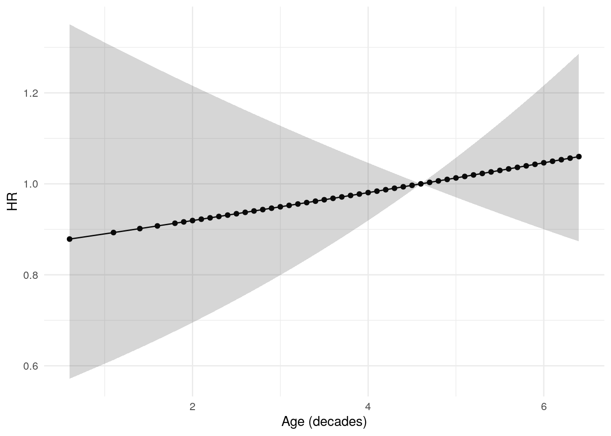
Code
# BMIplot_continuous_hr( data =flare.cd.df, model =cox_cd_soft, variable ="BMI")
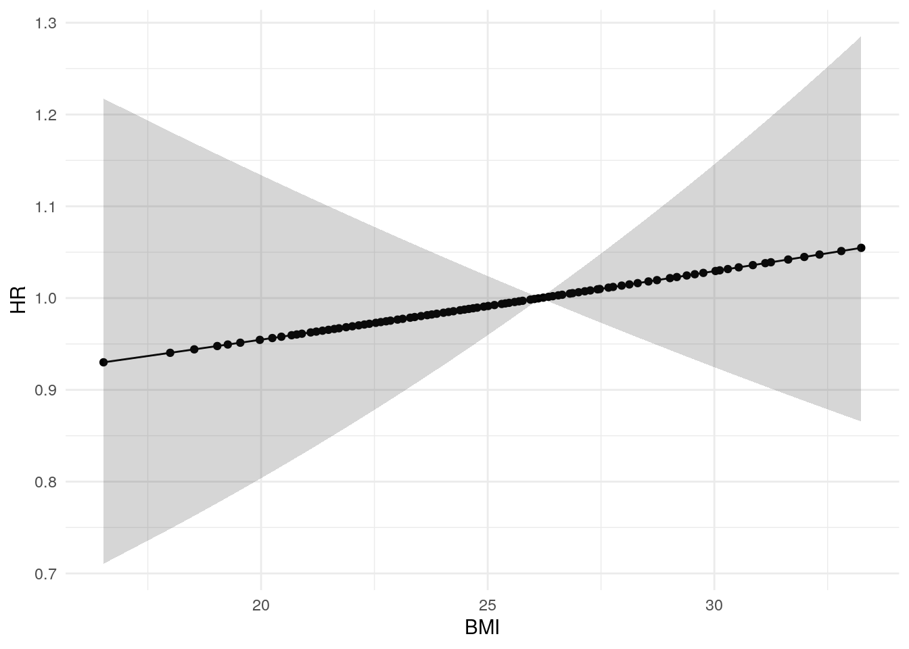
Code
# FCplot_continuous_hr( data =flare.cd.df, model =cox_cd_soft, variable ="FC")
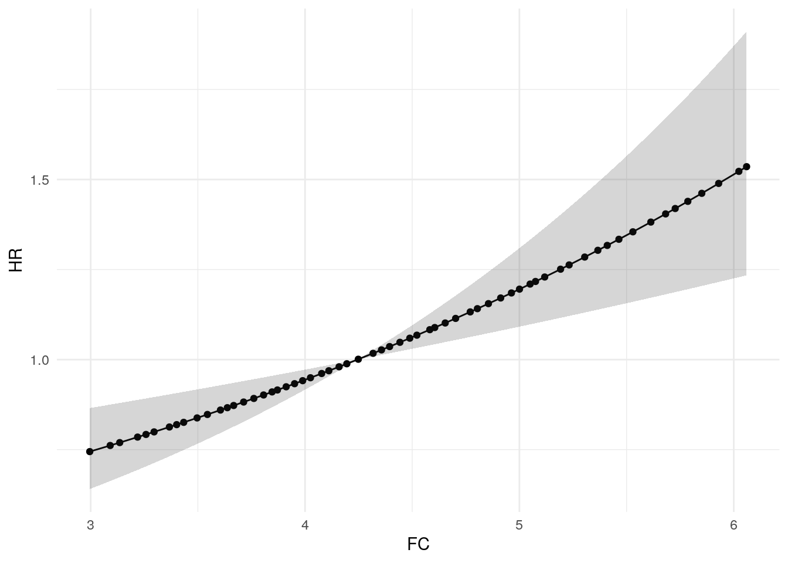
Code
# DQIplot_continuous_hr( data =flare.cd.df, model =cox_cd_soft, variable ="dqi_tot")+xlab("Diet quality index")
Objective flare
Code
# Just the continuous variablescox_cd_hard<-coxph(Surv(hardflare_time, hardflare)~Sex+IMD+age_decade+BMI+FC+dqi_tot+frailty(SiteNo), data =flare.cd.df)# Is there any benefit to using spline for:# agesummon_lrt(cox_cd_hard, remove ="age_decade", add ="ns(age_decade, df = 2)")
# None of the continuous variables benefit from a spline term
Code
# Ageplot_continuous_hr( data =flare.cd.df, model =cox_cd_hard, variable ="age_decade")+xlab("Age (decades)")
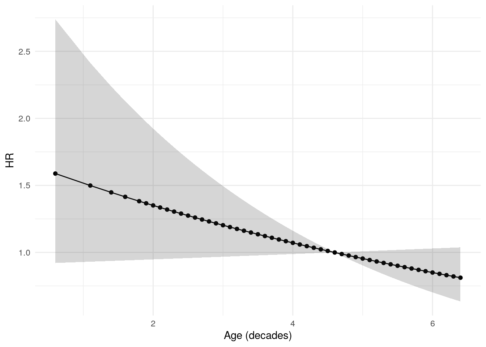
Code
# BMIplot_continuous_hr( data =flare.cd.df, model =cox_cd_hard, variable ="BMI")
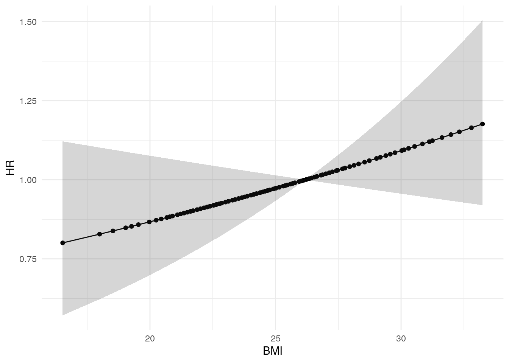
Code
# FCplot_continuous_hr( data =flare.cd.df, model =cox_cd_hard, variable ="FC")
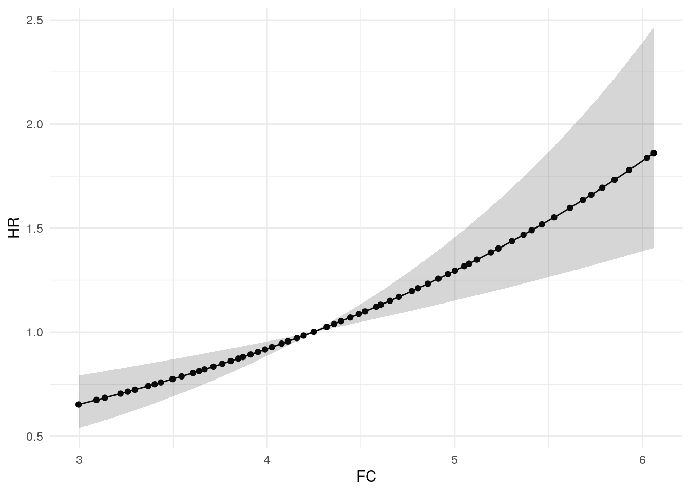
Code
# DQIplot_continuous_hr( data =flare.cd.df, model =cox_cd_hard, variable ="dqi_tot")+xlab("Diet quality index")
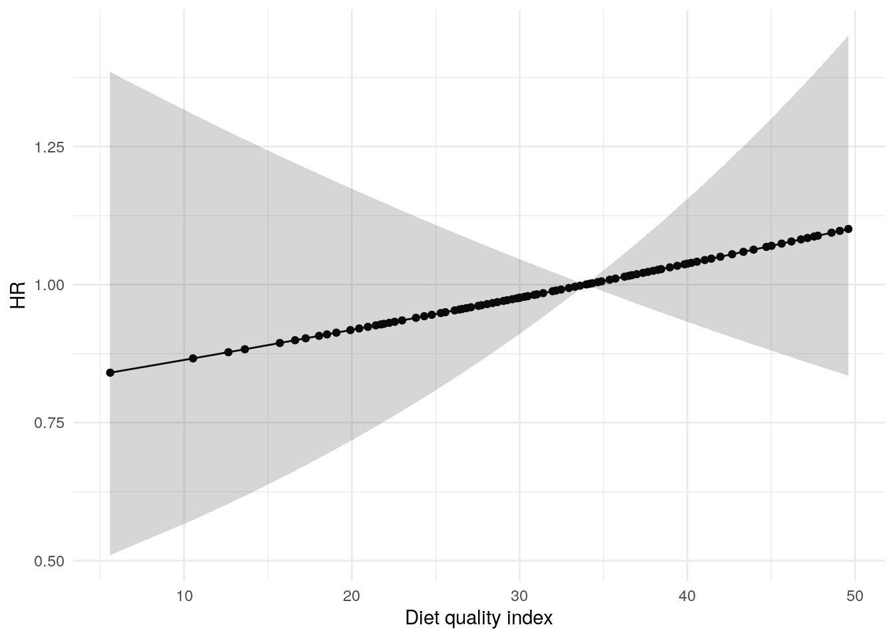
Ulcerative colitis
Patient-reported flare
Code
# Just the continuous variablescox_uc_soft<-coxph(Surv(softflare_time, softflare)~Sex+IMD+age_decade+BMI+FC+dqi_tot+frailty(SiteNo), data =flare.uc.df)# Is there any benefit to using spline for:# agesummon_lrt(cox_uc_soft, remove ="age_decade", add ="ns(age_decade, df = 2)")
# FC and dqi_tot can get a splinecox_uc_soft<-coxph(Surv(softflare_time, softflare)~Sex+IMD+age_decade+BMI+ns(FC, df =2)+ns(dqi_tot, df =2)+frailty(SiteNo), data =flare.uc.df)# Test for df = 3# FCsummon_lrt(cox_uc_soft, remove ="ns(FC, df = 2)", add ="ns(FC, df = 3)")
# Ageplot_continuous_hr( data =flare.uc.df, model =cox_uc_soft, variable ="age_decade")+xlab("Age (decades)")
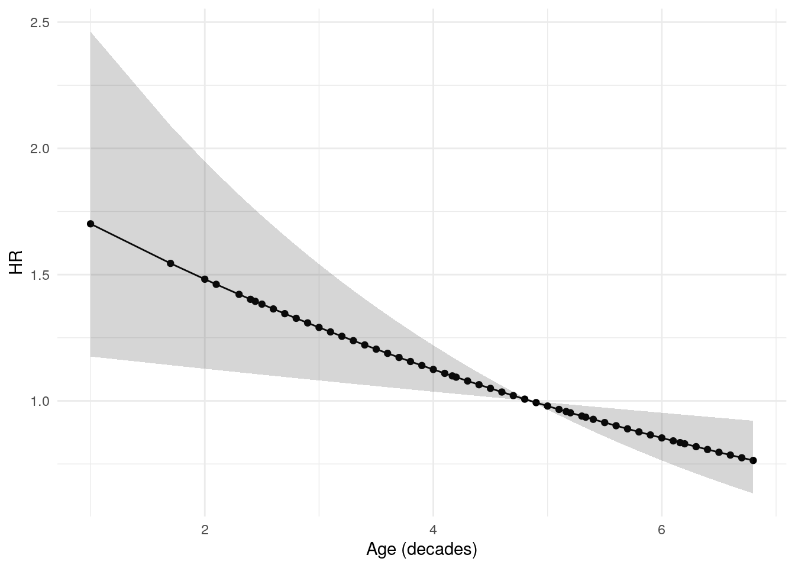
Code
# BMIplot_continuous_hr( data =flare.uc.df, model =cox_uc_soft, variable ="BMI")
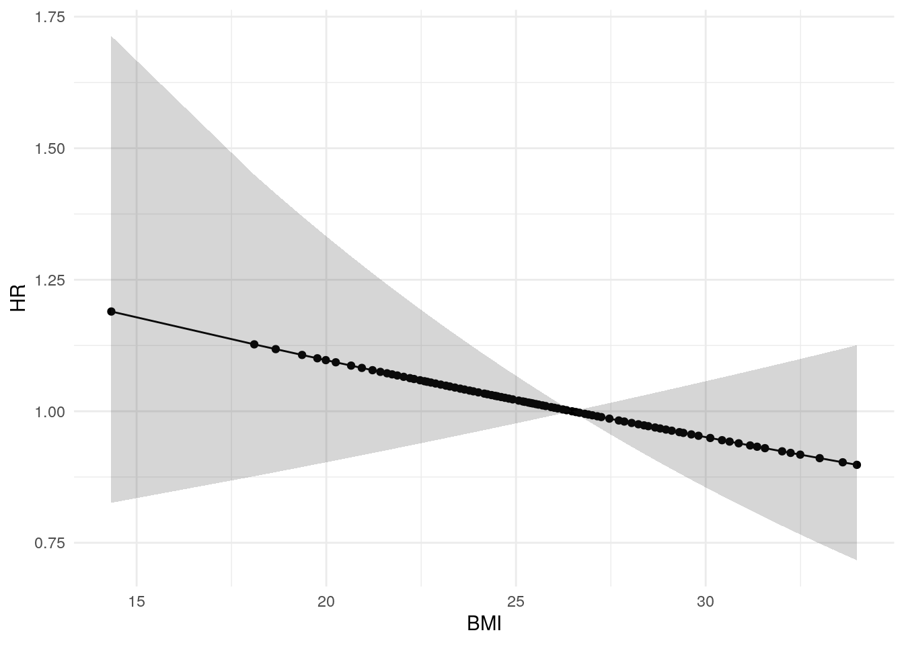
Code
# FCplot_continuous_hr( data =flare.uc.df, model =cox_uc_soft, variable ="FC", splineterm ="ns(FC, df = 2)")
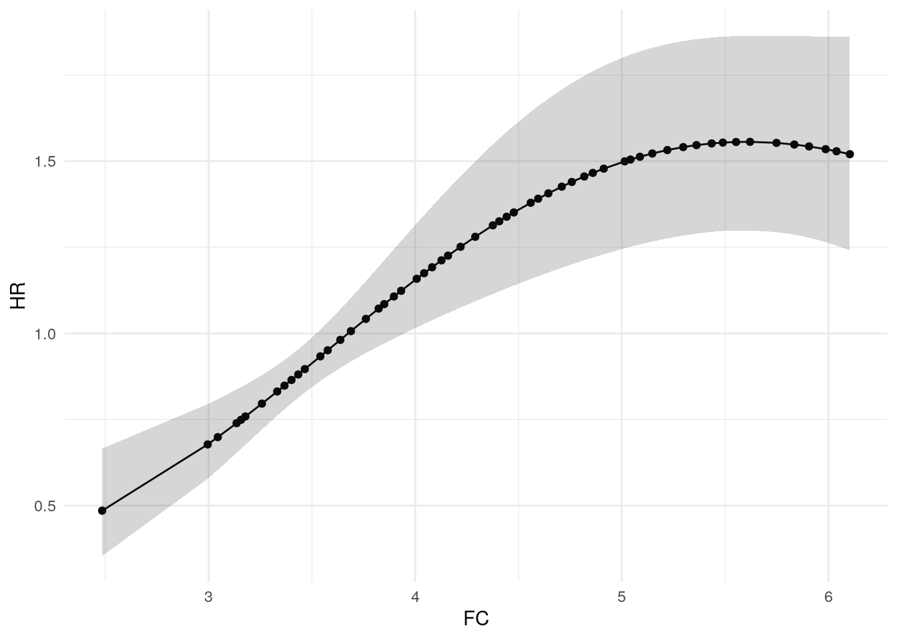
Code
# DQIplot_continuous_hr( data =flare.uc.df, model =cox_uc_soft, variable ="dqi_tot", splineterm ="ns(dqi_tot, df = 2)")+xlab("Diet quality index")
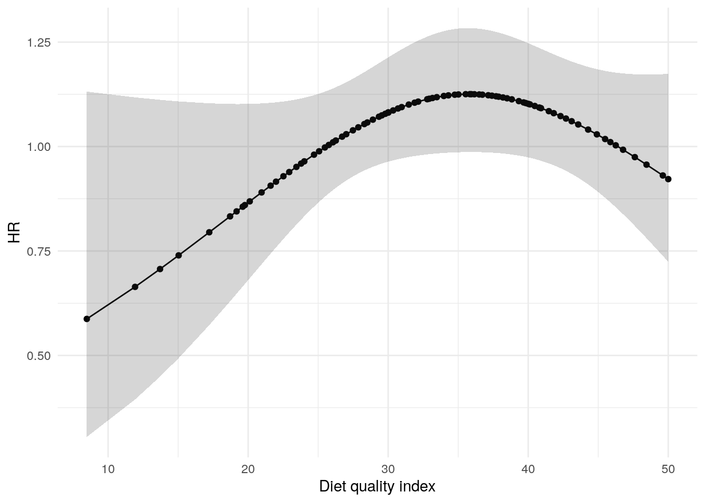
Code
#### Objective flare
Code
# Just the continuous variablescox_uc_hard<-coxph(Surv(hardflare_time, hardflare)~Sex+IMD+age_decade+BMI+FC+dqi_tot+frailty(SiteNo), data =flare.uc.df)# Is there any benefit to using spline for:# agesummon_lrt(cox_uc_hard, remove ="age_decade", add ="ns(age_decade, df = 2)")
# FC benefits from a splinecox_uc_hard<-coxph(Surv(hardflare_time, hardflare)~Sex+IMD+age_decade+BMI+ns(FC, df =2)+dqi_tot+frailty(SiteNo), data =flare.uc.df)# FCsummon_lrt(cox_uc_hard, remove ="ns(FC, df = 2)", add ="ns(FC, df = 3)")
Test
Remolved
Added
Log-likelihood
Statistic
DF
p-vaue
LRT
ns(FC, df = 2)
ns(FC, df = 3)
-673.943
0.838
1
0.36
Code
# Test for df = 3. df = 2 is sufficient for FC# FCsummon_lrt(cox_uc_hard, remove ="ns(FC, df = 2)", add ="ns(FC, df = 3)")
Test
Remolved
Added
Log-likelihood
Statistic
DF
p-vaue
LRT
ns(FC, df = 2)
ns(FC, df = 3)
-673.943
0.838
1
0.36
Code
# Ageplot_continuous_hr( data =flare.uc.df, model =cox_uc_hard, variable ="age_decade")+xlab("Age (decades)")
Code
# BMIplot_continuous_hr( data =flare.uc.df, model =cox_uc_hard, variable ="BMI")
Code
# FCplot_continuous_hr( data =flare.uc.df, model =cox_uc_hard, variable ="FC", splineterm ="ns(FC, df = 2)")
Code
# DQIplot_continuous_hr( data =flare.uc.df, model =cox_uc_hard, variable ="dqi_tot")+xlab("Diet quality index")
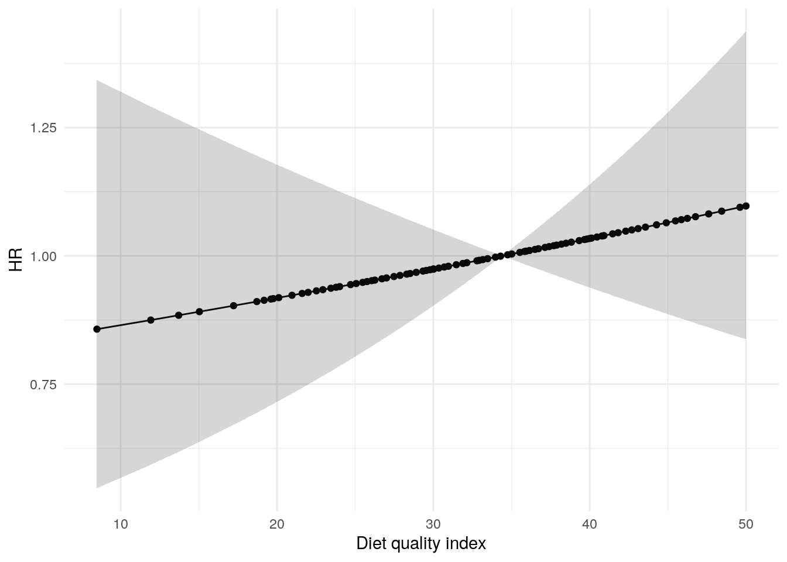
Total meat protein
This section examines the association between total meat protein intake (grams per day) and time to flare. Cox models are adjusted for sex, Index of Multiple Deprivation (IMD), age, BMI, FC (continuous), and diet quality index, with a frailty term for study site. We first test whether the relationship is non-linear using splines, then present hazard ratios and continuous HR curves.
Crohn’s disease
Patient reported flare
Code
cox_meat_cd_soft<-coxph(Surv(softflare_time, softflare)~Sex+IMD+age_decade+BMI+FC+Meat_sum+dqi_tot+frailty(SiteNo), data =flare.cd.df)# Do we need a spline? Nosummon_lrt(cox_meat_cd_soft, remove ="Meat_sum", add ="ns(Meat_sum, df = 2)")
# Meat sumplot_continuous_hr( data =flare.cd.df, model =cox_meat_cd_soft, variable ="Meat_sum")+xlab("Total meat protein (grams)")
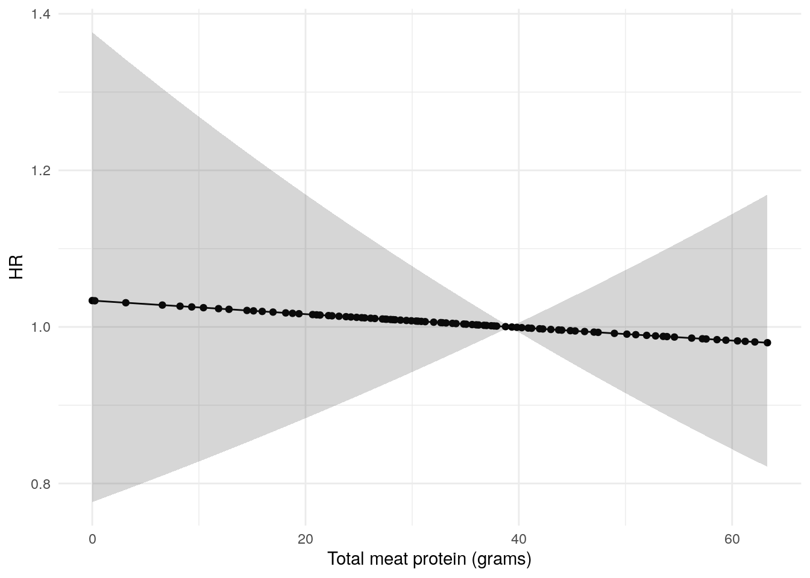
Objective flare
Code
cox_meat_cd_hard<-coxph(Surv(hardflare_time, hardflare)~Sex+IMD+age_decade+BMI+FC+Meat_sum+dqi_tot+frailty(SiteNo), data =flare.cd.df)# Do we need a spline? Nosummon_lrt(cox_meat_cd_hard, remove ="Meat_sum", add ="ns(Meat_sum, df = 2)")
# Meat sumplot_continuous_hr( data =flare.cd.df, model =cox_meat_cd_hard, variable ="Meat_sum")+xlab("Total meat protein (grams)")
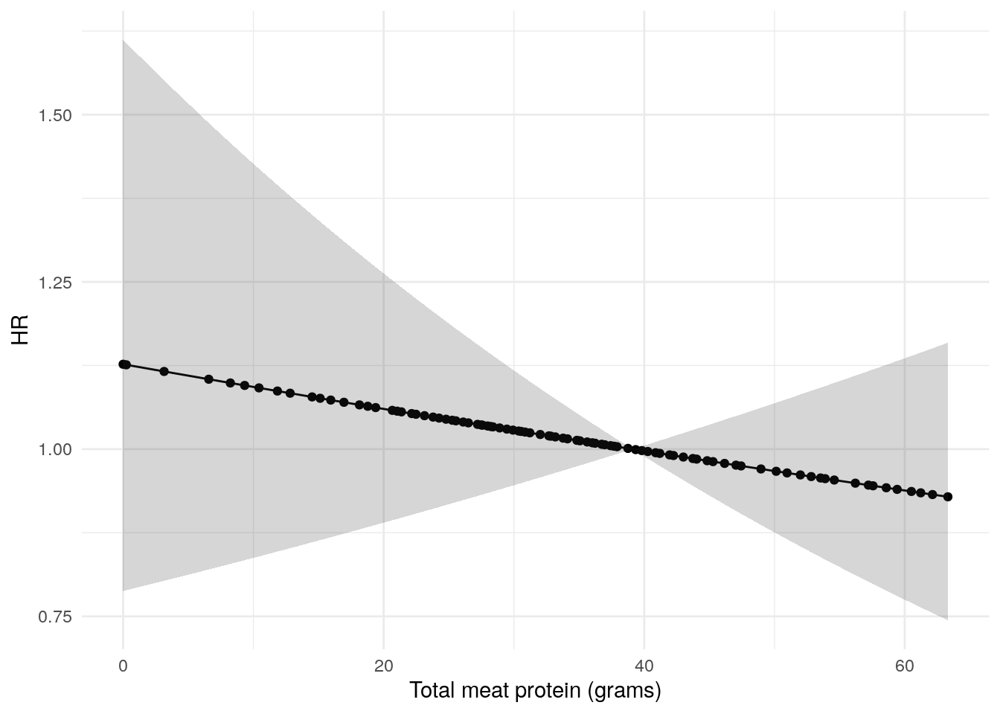
Ulcerative colitis
Patient reported flare
Code
cox_meat_uc_soft<-coxph(Surv(softflare_time, softflare)~Sex+IMD+age_decade+BMI+ns(FC, df =2)+Meat_sum+ns(dqi_tot, df =2)+frailty(SiteNo), data =flare.uc.df)# Do we need a spline? Nosummon_lrt(cox_meat_uc_soft, remove ="Meat_sum", add ="ns(Meat_sum, df = 2)")
# Meat sumplot_continuous_hr( data =flare.uc.df, model =cox_meat_uc_soft, variable ="Meat_sum")+xlab("Total meat protein (grams)")
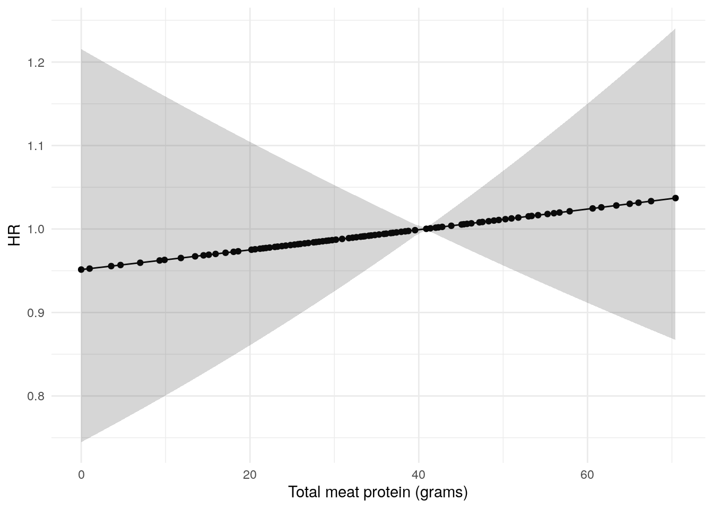
Objective flare
Code
cox_meat_uc_hard<-coxph(Surv(hardflare_time, hardflare)~Sex+IMD+age_decade+BMI+ns(FC, df =2)+Meat_sum+dqi_tot+frailty(SiteNo), data =flare.uc.df)# Do we need a spline? Nosummon_lrt(cox_meat_uc_hard, remove ="Meat_sum", add ="ns(Meat_sum, df = 2)")
# Meat sumplot_continuous_hr( data =flare.uc.df, model =cox_meat_uc_hard, variable ="Meat_sum")+xlab("Total meat protein (grams)")
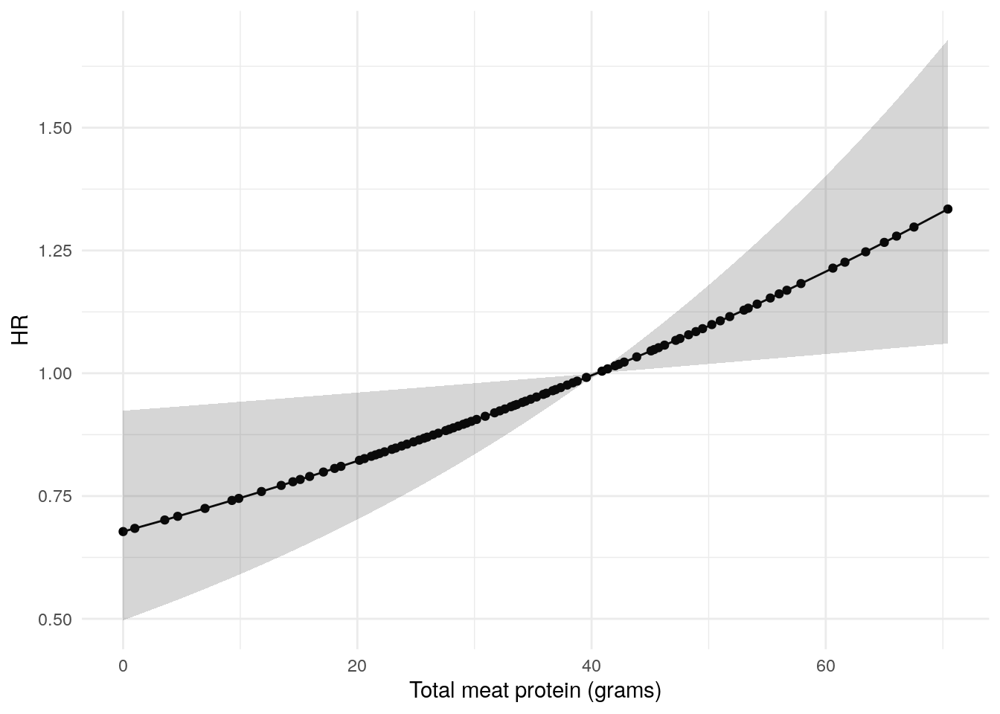
Code
plot_continuous_hr( data =flare.uc.df, model =cox_meat_uc_hard, variable ="FC", splineterm ="ns(FC, df = 2)")
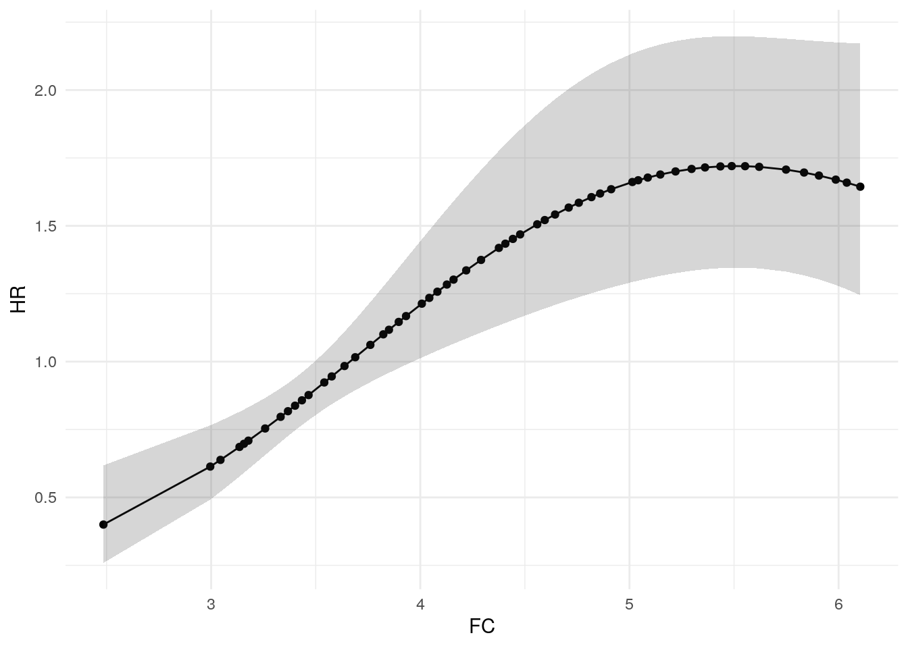
Dietary Fibre
This section examines the association between dietary fibre intake (grams per day) and time to flare, using the same covariate adjustment strategy as the meat protein analysis.
Crohn’s disease
Patient-reported flare
Code
cox_fibre_cd_soft<-coxph(Surv(softflare_time, softflare)~Sex+IMD+age_decade+BMI+FC+fibre+dqi_tot+frailty(SiteNo), data =flare.cd.df)# Do we need a spline? Nosummon_lrt(cox_fibre_cd_soft, remove ="fibre", add ="ns(fibre, df = 2)")
plot_continuous_hr( data =flare.uc.df, model =cox_fibre_uc_hard, variable ="fibre")+xlab("Dietary fibre (grams)")
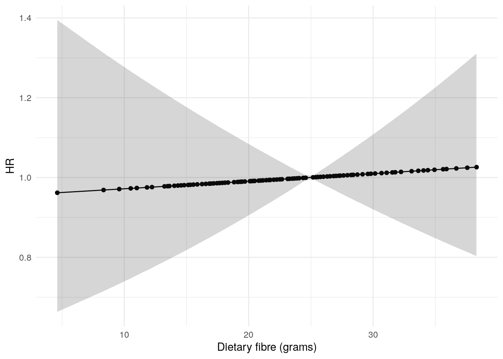
Polyunsaturated fatty acids
This section examines the association between PUFA intake (as percentage of total energy) and time to flare. Note that while the study protocol specified n-6 PUFAs, the available FFQ data captures total PUFA (both n-3 and n-6).
Crohn’s disease
Patient-reported flare
Code
cox_pufa_cd_soft<-coxph(Surv(softflare_time, softflare)~Sex+IMD+age_decade+BMI+FC+PUFA_percEng+dqi_tot+frailty(SiteNo), data =flare.cd.df)# Do we need a spline? Close to 0.05, lets add onesummon_lrt(cox_pufa_cd_soft, remove ="PUFA_percEng", add ="ns(PUFA_percEng, df = 2)")
# Significance - need to use LRTsummon_lrt(cox_pufa_cd_soft, remove ="ns(PUFA_percEng, df = 2)")
Test
Remolved
Added
Log-likelihood
Statistic
DF
p-vaue
LRT
ns(PUFA_percEng, df = 2)
NA
-1013.132
3.338
2
0.188
Code
plot_continuous_hr( data =flare.cd.df, model =cox_pufa_cd_soft, variable ="PUFA_percEng", splineterm ="ns(PUFA_percEng, df = 2)")+xlab("PUFA")
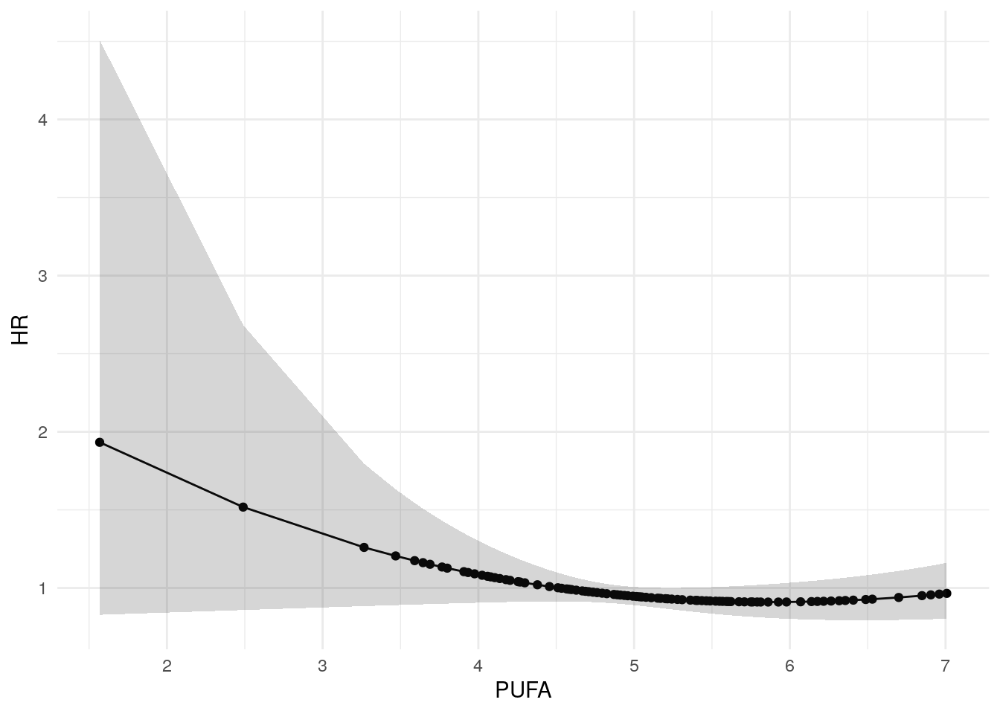
Objective Flare
Code
cox_pufa_cd_hard<-coxph(Surv(hardflare_time, hardflare)~Sex+IMD+age_decade+BMI+FC+PUFA_percEng+dqi_tot+frailty(SiteNo), data =flare.cd.df)# Do we need a spline? Nosummon_lrt(cox_pufa_cd_hard, remove ="PUFA_percEng", add ="ns(PUFA_percEng, df = 2)")
plot_continuous_hr( data =flare.cd.df, model =cox_pufa_cd_hard, variable ="PUFA_percEng")+xlab("PUFA")
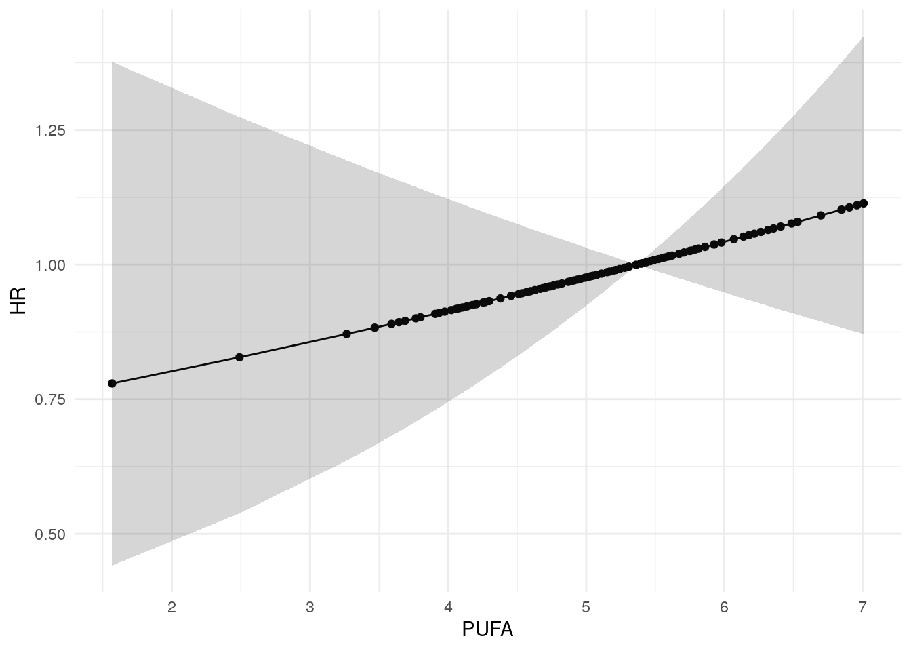
Ulcerative colitis
Patient-reported flare
Code
cox_pufa_uc_soft<-coxph(Surv(softflare_time, softflare)~Sex+IMD+age_decade+BMI+ns(FC, df =2)+PUFA_percEng+ns(dqi_tot, df =2)+frailty(SiteNo), data =flare.uc.df)# Do we need a spline? Nosummon_lrt(cox_pufa_uc_soft, remove ="PUFA_percEng", add ="ns(PUFA_percEng, df = 2)")
plot_continuous_hr( data =flare.uc.df, model =cox_pufa_uc_soft, variable ="PUFA_percEng")+xlab("PUFA")
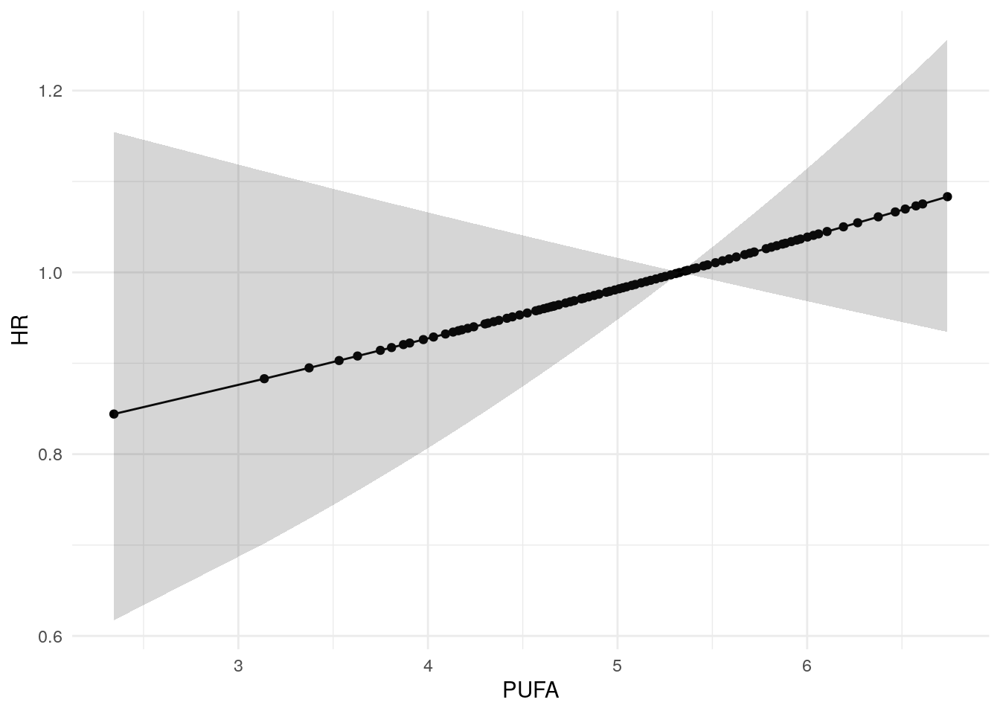
Objective Flare
Code
cox_pufa_uc_hard<-coxph(Surv(hardflare_time, hardflare)~Sex+IMD+age_decade+BMI+ns(FC, df =2)+PUFA_percEng+dqi_tot+frailty(SiteNo), data =flare.uc.df)# Do we need a spline? Nosummon_lrt(cox_pufa_uc_hard, remove ="PUFA_percEng", add ="ns(PUFA_percEng, df = 2)")
plot_continuous_hr( data =flare.uc.df, model =cox_pufa_uc_hard, variable ="PUFA_percEng")
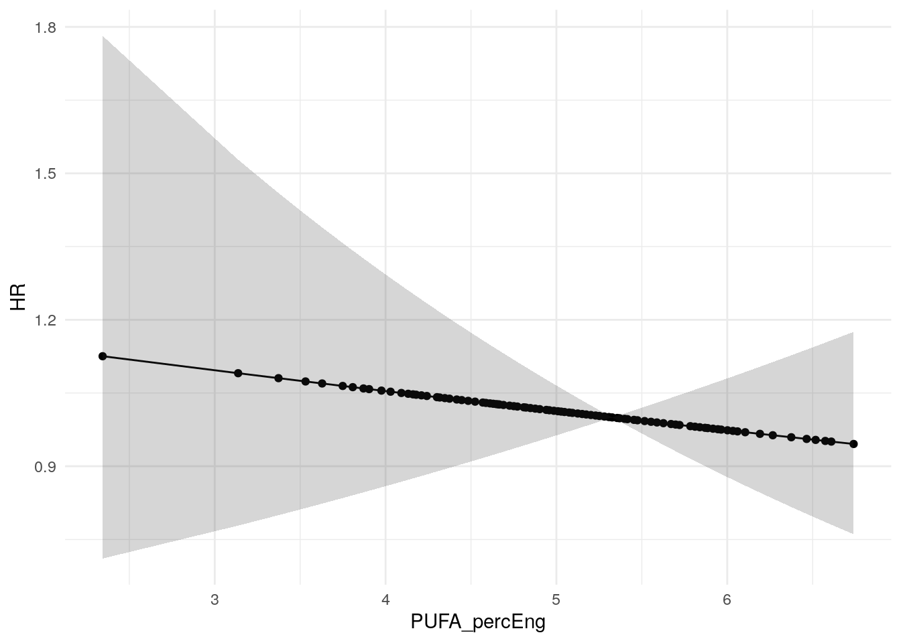
Ultra-processed food
This section examines the association between ultra-processed food consumption (percentage of daily energy intake from UPF) and time to flare. UPF is defined according to the NOVA classification system as foods that have undergone substantial industrial processing.
Crohn’s disease
Patient-reported flare
Code
cox_upf_cd_soft<-coxph(Surv(softflare_time, softflare)~Sex+IMD+age_decade+BMI+FC+UPF_perc+dqi_tot+frailty(SiteNo), data =flare.cd.df)# Do we need a spline? No summon_lrt(cox_upf_cd_soft, remove ="UPF_perc", add ="ns(UPF_perc, df = 2)")
plot_continuous_hr( data =flare.cd.df, model =cox_upf_cd_soft, variable ="UPF_perc")+xlab("UPF (%)")
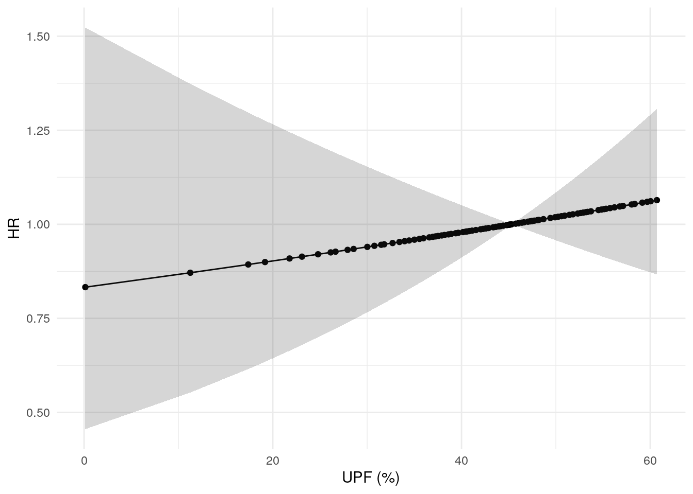
Objective Flare
Code
cox_upf_cd_hard<-coxph(Surv(hardflare_time, hardflare)~Sex+IMD+age_decade+BMI+FC+UPF_perc+dqi_tot+frailty(SiteNo), data =flare.cd.df)# Do we need a spline? Nosummon_lrt(cox_upf_cd_hard, remove ="UPF_perc", add ="ns(UPF_perc, df = 2)")
plot_continuous_hr( data =flare.cd.df, model =cox_upf_cd_hard, variable ="UPF_perc")+xlab("UPF (%)")
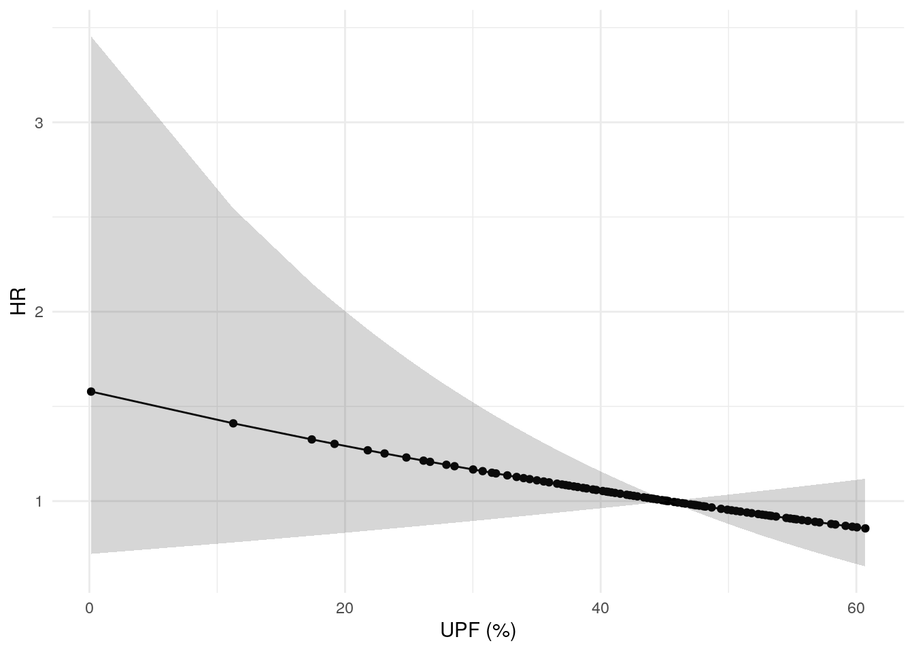
Ulcerative colitis
Patient-reported flare
Code
cox_upf_uc_soft<-coxph(Surv(softflare_time, softflare)~Sex+IMD+age_decade+BMI+ns(FC, df =2)+UPF_perc+ns(dqi_tot, df =2)+frailty(SiteNo), data =flare.uc.df)# Do we need a spline? Nosummon_lrt(cox_upf_uc_soft, remove ="UPF_perc", add ="ns(UPF_perc, df = 2)")
plot_continuous_hr( data =flare.uc.df, model =cox_upf_uc_soft, variable ="UPF_perc")+xlab("UPF (%)")
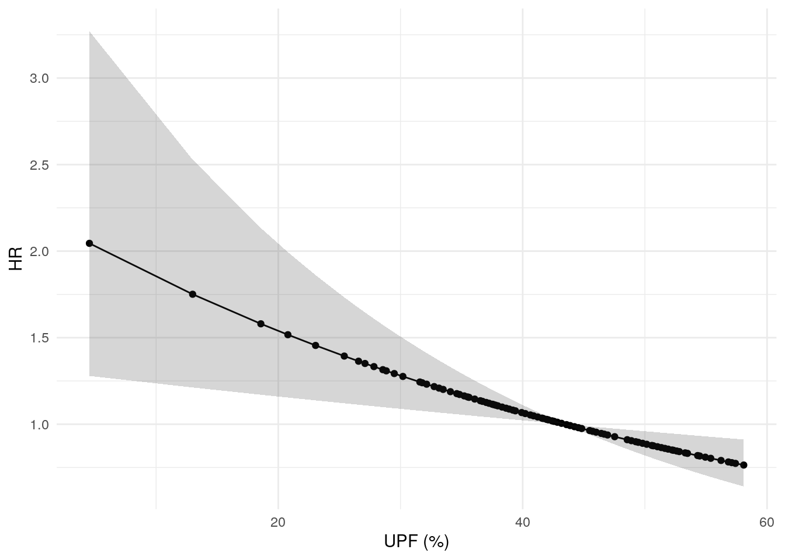
Objective Flare
Code
cox_upf_uc_hard<-coxph(Surv(hardflare_time, hardflare)~Sex+IMD+age_decade+BMI+ns(FC, df =2)+UPF_perc+dqi_tot+frailty(SiteNo), data =flare.uc.df)# Do we need a spline? Nosummon_lrt(cox_upf_uc_hard, remove ="UPF_perc", add ="ns(UPF_perc, df = 2)")
plot_continuous_hr( data =flare.uc.df, model =cox_upf_uc_hard, variable ="UPF_perc")+xlab("UPF (%)")
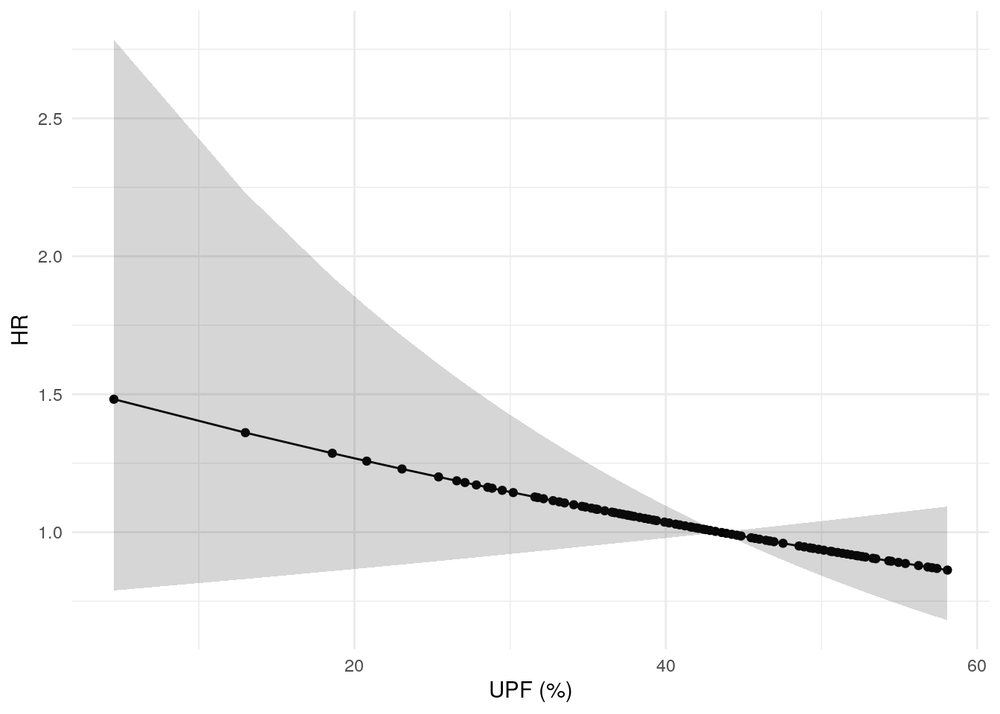
Results
Risk difference
Code
# How many bootstrapsnboot<-199
Risk differences quantify the absolute change in cumulative incidence of flare at a specific time point (1 year) associated with different levels of each dietary exposure. These are population-averaged estimates obtained by:
Predicting individual-level survival for each participant at specified dietary exposure values
Averaging across the population to obtain mean cumulative incidence
Calculating differences relative to a reference value (median)
Bootstrapping to obtain 95% confidence intervals
Results are presented as forest plots with corresponding risk difference values and confidence intervals.
Crohn’s disease
Patient-reported flare
Code
# Values for calculation risk differencerd_values_meat_cd<-quantile(flare.cd.df$Meat_sum, probs =c(0, 0.25, 0.5, 0.75, 0.95), na.rm =TRUE)%>%round()rd_values_fibre_cd<-quantile(flare.cd.df$fibre, probs =c(0, 0.25, 0.5, 0.75, 0.95), na.rm =TRUE)%>%round()rd_values_pufa_cd<-quantile(flare.cd.df$PUFA_percEng, probs =c(0, 0.25, 0.5, 0.75, 0.95), na.rm =TRUE)%>%round(digits =1)rd_values_upf_cd<-quantile(flare.cd.df$UPF_perc, probs =c(0, 0.25, 0.5, 0.75, 0.95), na.rm =TRUE)%>%round()# Calculate risk difference for these valuesdata_rd_cd_soft_meat<-summon_population_risk_difference_boot( data =flare.cd.df, model =cox_meat_cd_soft, times =c(365), variable ="Meat_sum", values =rd_values_meat_cd, ref_value =NULL, nboot =nboot)%>%dplyr::mutate( term_tidy =paste0("Total meat protein: ", value))data_rd_cd_soft_fibre<-summon_population_risk_difference_boot( data =flare.cd.df, model =cox_fibre_cd_soft, times =c(365), variable ="fibre", values =rd_values_fibre_cd, ref_value =NULL, nboot =nboot)%>%dplyr::mutate( term_tidy =paste0("Dietary fibre: ", value))data_rd_cd_soft_pufa<-summon_population_risk_difference_boot( data =flare.cd.df, model =cox_pufa_cd_soft, times =c(365), variable ="PUFA_percEng", values =rd_values_pufa_cd, ref_value =NULL, nboot =nboot)%>%dplyr::mutate( term_tidy =paste0("PUFA: ", value))data_rd_cd_soft_upf<-summon_population_risk_difference_boot( data =flare.cd.df, model =cox_upf_cd_soft, times =c(365), variable ="UPF_perc", values =rd_values_upf_cd, ref_value =NULL, nboot =nboot)%>%dplyr::mutate( term_tidy =paste0("UPF (%): ", value))# Creating combined forest plot# 1-year risk differenceplot_rd_cd_soft_meat_1y<-summon_rd_forest_plot(data_rd_cd_soft_meat, time =365)plot_rd_cd_soft_fibre_1y<-summon_rd_forest_plot(data_rd_cd_soft_fibre, time =365)plot_rd_cd_soft_pufa_1y<-summon_rd_forest_plot(data_rd_cd_soft_pufa, time =365)plot_rd_cd_soft_upf_1y<-summon_rd_forest_plot(data_rd_cd_soft_upf, time =365)
Code
# Final plots using patchwork# 1-year risk differenceplot_rd_cd_soft_meat_1y$plot+plot_rd_cd_soft_meat_1y$rd+plot_rd_cd_soft_fibre_1y$plot+plot_rd_cd_soft_fibre_1y$rd+plot_rd_cd_soft_pufa_1y$plot+plot_rd_cd_soft_pufa_1y$rd+plot_rd_cd_soft_upf_1y$plot+plot_rd_cd_soft_upf_1y$rd+patchwork::plot_layout( ncol =2, guides ="collect", axes ="collect", width =c(2, 1))+patchwork::plot_annotation( title ="1-year risk difference", subtitle ="Crohn's, patient reported flare.")&coord_cartesian(xlim =c(-30, 60))
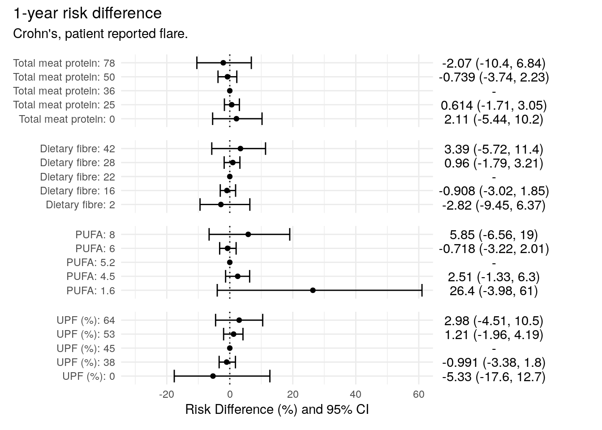
Objective Flare
Code
# Calculate risk difference for these valuesdata_rd_cd_hard_meat<-summon_population_risk_difference_boot( data =flare.cd.df, model =cox_meat_cd_hard, times =c(365), variable ="Meat_sum", values =rd_values_meat_cd, ref_value =NULL, nboot =nboot)%>%dplyr::mutate( term_tidy =paste0("Total meat protein: ", value))data_rd_cd_hard_fibre<-summon_population_risk_difference_boot( data =flare.cd.df, model =cox_fibre_cd_hard, times =c(365), variable ="fibre", values =rd_values_fibre_cd, ref_value =NULL, nboot =nboot)%>%dplyr::mutate( term_tidy =paste0("Dietary fibre: ", value))data_rd_cd_hard_pufa<-summon_population_risk_difference_boot( data =flare.cd.df, model =cox_pufa_cd_hard, times =c(365), variable ="PUFA_percEng", values =rd_values_pufa_cd, ref_value =NULL, nboot =nboot)%>%dplyr::mutate( term_tidy =paste0("PUFA: ", value))data_rd_cd_hard_upf<-summon_population_risk_difference_boot( data =flare.cd.df, model =cox_upf_cd_hard, times =c(365), variable ="UPF_perc", values =rd_values_upf_cd, ref_value =NULL, nboot =nboot)%>%dplyr::mutate( term_tidy =paste0("UPF (%): ", value))# Creating combined forest plot# 1-year risk differenceplot_rd_cd_hard_meat_1y<-summon_rd_forest_plot(data_rd_cd_hard_meat, time =365)plot_rd_cd_hard_fibre_1y<-summon_rd_forest_plot(data_rd_cd_hard_fibre, time =365)plot_rd_cd_hard_pufa_1y<-summon_rd_forest_plot(data_rd_cd_hard_pufa, time =365)plot_rd_cd_hard_upf_1y<-summon_rd_forest_plot(data_rd_cd_hard_upf, time =365)
Code
# Final plots using patchwork# 1-year risk differenceplot_rd_cd_hard_meat_1y$plot+plot_rd_cd_hard_meat_1y$rd+plot_rd_cd_hard_fibre_1y$plot+plot_rd_cd_hard_fibre_1y$rd+plot_rd_cd_hard_pufa_1y$plot+plot_rd_cd_hard_pufa_1y$rd+plot_rd_cd_hard_upf_1y$plot+plot_rd_cd_hard_upf_1y$rd+patchwork::plot_layout( ncol =2, guides ="collect", axes ="collect", width =c(2, 1))+patchwork::plot_annotation( title ="1-year risk difference", subtitle ="Crohn's, objective flare.")&coord_cartesian(xlim =c(-10, 20))
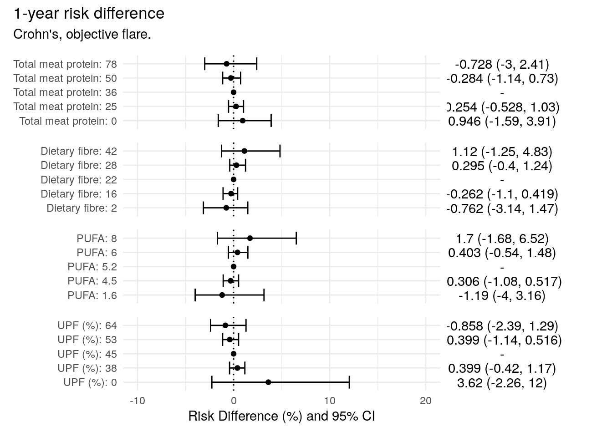
Ulcerative colitis
Patient-reported flare
Code
# Values for calculation risk differencerd_values_meat_uc<-quantile(flare.uc.df$Meat_sum, probs =c(0, 0.25, 0.5, 0.75, 0.95), na.rm =TRUE)%>%round()rd_values_fibre_uc<-quantile(flare.uc.df$fibre, probs =c(0, 0.25, 0.5, 0.75, 0.95), na.rm =TRUE)%>%round()rd_values_pufa_uc<-quantile(flare.uc.df$PUFA_percEng, probs =c(0, 0.25, 0.5, 0.75, 0.95), na.rm =TRUE)%>%round(digits =1)rd_values_upf_uc<-quantile(flare.uc.df$UPF_perc, probs =c(0, 0.25, 0.5, 0.75, 0.95), na.rm =TRUE)%>%round()# Calculate risk difference for these valuesdata_rd_uc_soft_meat<-summon_population_risk_difference_boot( data =flare.uc.df, model =cox_meat_uc_soft, times =c(365), variable ="Meat_sum", values =rd_values_meat_uc, ref_value =NULL, nboot =nboot)%>%dplyr::mutate( term_tidy =paste0("Total meat protein: ", value))data_rd_uc_soft_fibre<-summon_population_risk_difference_boot( data =flare.uc.df, model =cox_fibre_uc_soft, times =c(365), variable ="fibre", values =rd_values_fibre_uc, ref_value =NULL, nboot =nboot)%>%dplyr::mutate( term_tidy =paste0("Dietary fibre: ", value))data_rd_uc_soft_pufa<-summon_population_risk_difference_boot( data =flare.uc.df, model =cox_pufa_uc_soft, times =c(365), variable ="PUFA_percEng", values =rd_values_pufa_uc, ref_value =NULL, nboot =nboot)%>%dplyr::mutate( term_tidy =paste0("PUFA: ", value))data_rd_uc_soft_upf<-summon_population_risk_difference_boot( data =flare.uc.df, model =cox_upf_uc_soft, times =c(365), variable ="UPF_perc", values =rd_values_upf_uc, ref_value =NULL, nboot =nboot)%>%dplyr::mutate( term_tidy =paste0("UPF (%): ", value))# Creating combined forest plot# 1-year risk differenceplot_rd_uc_soft_meat_1y<-summon_rd_forest_plot(data_rd_uc_soft_meat, time =365)plot_rd_uc_soft_fibre_1y<-summon_rd_forest_plot(data_rd_uc_soft_fibre, time =365)plot_rd_uc_soft_pufa_1y<-summon_rd_forest_plot(data_rd_uc_soft_pufa, time =365)plot_rd_uc_soft_upf_1y<-summon_rd_forest_plot(data_rd_uc_soft_upf, time =365)
Code
# Final plots using patchwork# 1-year risk differenceplot_rd_uc_soft_meat_1y$plot+plot_rd_uc_soft_meat_1y$rd+plot_rd_uc_soft_fibre_1y$plot+plot_rd_uc_soft_fibre_1y$rd+plot_rd_uc_soft_pufa_1y$plot+plot_rd_uc_soft_pufa_1y$rd+plot_rd_uc_soft_upf_1y$plot+plot_rd_uc_soft_upf_1y$rd+patchwork::plot_layout( ncol =2, guides ="collect", axes ="collect", width =c(2, 1))+patchwork::plot_annotation( title ="1-year risk difference", subtitle ="Ulcerative colitis, patient reported flare.")&coord_cartesian(xlim =c(-20, 40))
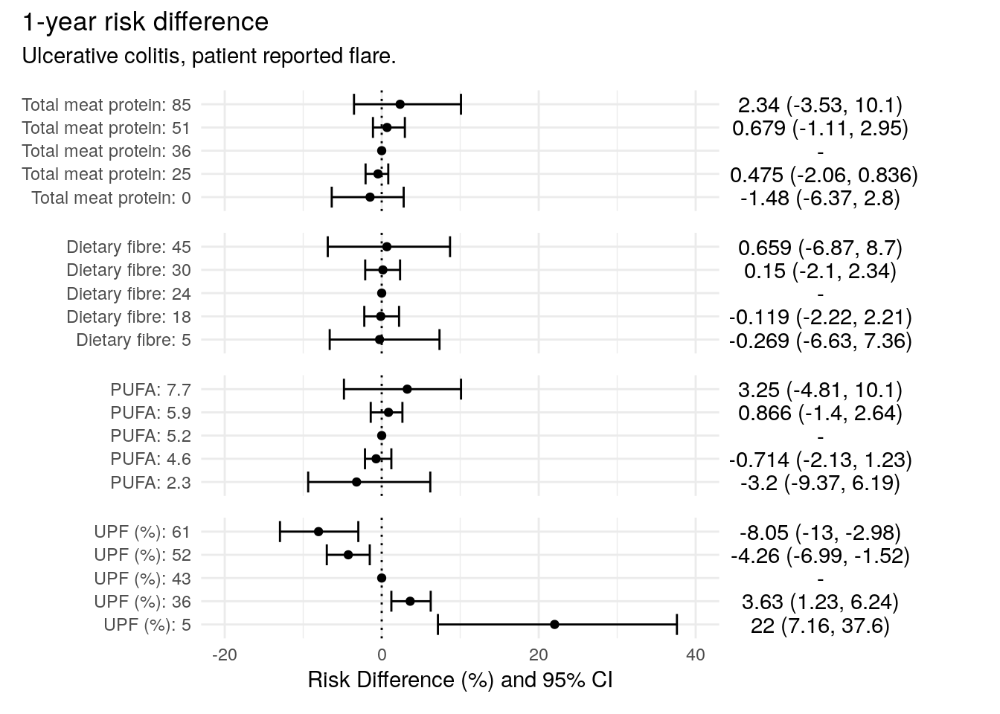
Objective Flare
Code
# Calculate risk difference for these valuesdata_rd_uc_hard_meat<-summon_population_risk_difference_boot( data =flare.uc.df, model =cox_meat_uc_hard, times =c(365), variable ="Meat_sum", values =rd_values_meat_uc, ref_value =NULL, nboot =nboot)%>%dplyr::mutate( term_tidy =paste0("Total meat protein: ", value))data_rd_uc_hard_fibre<-summon_population_risk_difference_boot( data =flare.uc.df, model =cox_fibre_uc_hard, times =c(365), variable ="fibre", values =rd_values_fibre_uc, ref_value =NULL, nboot =nboot)%>%dplyr::mutate( term_tidy =paste0("Dietary fibre: ", value))data_rd_uc_hard_pufa<-summon_population_risk_difference_boot( data =flare.uc.df, model =cox_pufa_uc_hard, times =c(365), variable ="PUFA_percEng", values =rd_values_pufa_uc, ref_value =NULL, nboot =nboot)%>%dplyr::mutate( term_tidy =paste0("PUFA: ", value))data_rd_uc_hard_upf<-summon_population_risk_difference_boot( data =flare.uc.df, model =cox_upf_uc_hard, times =c(365), variable ="UPF_perc", values =rd_values_upf_uc, ref_value =NULL, nboot =nboot)%>%dplyr::mutate( term_tidy =paste0("UPF (%): ", value))# Creating combined forest plot# 1-year risk differenceplot_rd_uc_hard_meat_1y<-summon_rd_forest_plot(data_rd_uc_hard_meat, time =365)plot_rd_uc_hard_fibre_1y<-summon_rd_forest_plot(data_rd_uc_hard_fibre, time =365)plot_rd_uc_hard_pufa_1y<-summon_rd_forest_plot(data_rd_uc_hard_pufa, time =365)plot_rd_uc_hard_upf_1y<-summon_rd_forest_plot(data_rd_uc_hard_upf, time =365)
Code
# Final plots using patchwork# 1-year risk differenceplot_rd_uc_hard_meat_1y$plot+plot_rd_uc_hard_meat_1y$rd+plot_rd_uc_hard_fibre_1y$plot+plot_rd_uc_hard_fibre_1y$rd+plot_rd_uc_hard_pufa_1y$plot+plot_rd_uc_hard_pufa_1y$rd+plot_rd_uc_hard_upf_1y$plot+plot_rd_uc_hard_upf_1y$rd+patchwork::plot_layout( ncol =2, guides ="collect", axes ="collect", width =c(2, 1))+patchwork::plot_annotation( title ="1-year risk difference", subtitle ="Ulcerative colitis, objective flare.")&coord_cartesian(xlim =c(-10, 20))
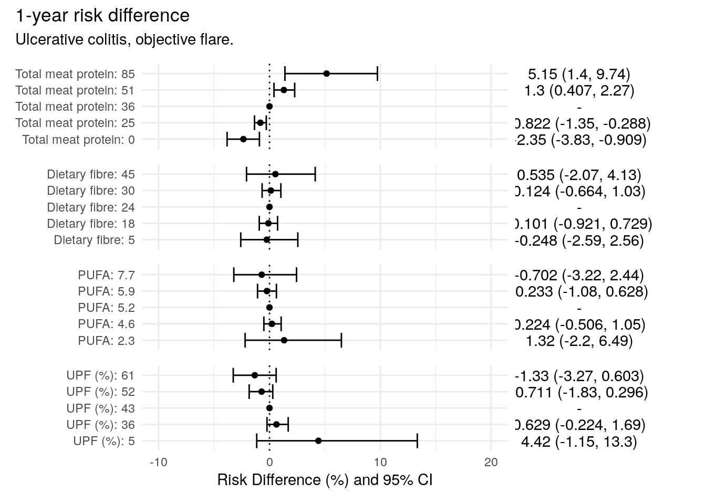
Source Code
---title: "Diet"Author: - name: "Alexander Rudge" corresponding: true affiliations: - ref: CGEMformat: html: code-fold: true code-tools: trueeditor: visualtoc: truetoc-expand: true---## OverviewThis report presents a sensitivity analysis examining the association between dietary factors and disease flare risk in inflammatory bowel disease (IBD) patients. Unlike the primary analysis which categorizes fecal calprotectin (FC) into quantiles, this analysis treats FC as a continuous variable in Cox proportional hazards models.The key methodological differences from the primary analysis are:1. **Continuous FC**: FC is included as a continuous predictor rather than categorical2. **Spline modeling**: Natural splines are tested to assess non-linear relationships3. **Hazard ratio curves**: Continuous hazard ratios are plotted across the range of each dietary variable4. **Risk difference estimation**: Population-average risk differences are calculated using bootstrappingDietary variables examined include total meat protein, dietary fibre, polyunsaturated fatty acids (PUFA), and ultra-processed food (UPF) intake. Analyses are stratified by disease type (Crohn's disease vs. ulcerative colitis) and flare definition (patient-reported vs. objective).# Setting up in R## Load the data```{R}library(splines)library(patchwork)source("Survival/utils.R")# Setup analysis environmentanalysis_setup <-setup_analysis()paths <- analysis_setup$pathsdemo <- analysis_setup$demoflare.df <-readRDS(paste0(paths$outdir, "flares-biochem.RDS"))flare.cd.df <-readRDS(paste0(paths$outdir, "flares-biochem-cd.RDS"))flare.uc.df <-readRDS(paste0(paths$outdir, "flares-biochem-uc.RDS"))```## Data cleaning```{R}# FC has been logged twice - reverseflare.df %<>% dplyr::mutate(FC =exp(FC))flare.cd.df %<>% dplyr::mutate(FC =exp(FC))flare.uc.df %<>% dplyr::mutate(FC =exp(FC))# So now FC is on the original measurement scale (log transformation reversed)# Transform age variable to decadesflare.df %<>% dplyr::mutate(age_decade = Age /10 )flare.cd.df %<>% dplyr::mutate(age_decade = Age /10 )flare.uc.df %<>% dplyr::mutate(age_decade = Age /10 )```## Helper functions```{R}plot_continuous_hr <-function(data, model, variable, splineterm =NULL){# Plotting continuous Hazard Ratio curves# Data is the same data used to fit the Cox model# model is a Cox model# variable is the variable we are plotting# splineterm is the spline used in the model, if there is one# Range of the variable to plot variable_range <- data %>% dplyr::pull(variable) %>%quantile(., probs =seq(0, 0.9, 0.01), na.rm =TRUE) %>%unname() %>%unique()# If there is a splineif (!is.null(splineterm)){# Recreate the spline spline <-with(data, eval(parse(text = splineterm)))# Get the spline terms for the variable values we are plotting spline_values <-predict(spline, newx = variable_range)# Get the reference values of the variables that were used to fit the Cox model X_ref <- model$means# New values to calculate the HR at # Take the ref values and vary our variable of interest# Number of values n_values <- variable_range %>%length() X_ref <-matrix(rep(X_ref, n_values), nrow = n_values, byrow =TRUE)# Fix the column namescolnames(X_ref) <-names(model$means)# Now add our new variable values X_new <- X_ref# Identify the correct columns column_pos <- stringr::str_detect(colnames(X_new), variable)# Add the values - ordering of columns and model term names should be preserved X_new[,column_pos] <- spline_values# Calculate the linear predictor and se# Method directly from predict.coxph from the survival package lp <- (X_new - X_ref)%*%coef(model) lp_se <-rowSums((X_new - X_ref)%*%vcov(model)*(X_new - X_ref)) %>%as.numeric() %>%sqrt() } else {# If there is no spline then it is easier# Get the reference values of the variables that were used to fit the Cox model X_ref <- model$means# New values to calculate the HR at # Take the ref values and vary our variable of interest# Number of values n_values <- variable_range %>%length() X_ref <-matrix(rep(X_ref, n_values), nrow = n_values, byrow =TRUE)# Fix the column namescolnames(X_ref) <-names(model$means)# Now add our new variable values X_new <- X_ref# Add the values X_new[,variable] <- variable_range# Calculate the linear predictor and se# Method directly from predict.coxph from the survival package lp <- (X_new - X_ref)%*%coef(model) %>%as.numeric() lp_se <-rowSums((X_new - X_ref)%*%vcov(model)*(X_new - X_ref)) %>%as.numeric() %>%sqrt() }# Store results in a tibble data_pred <-tibble(!!sym(variable) := variable_range,p = lp,se = lp_se )# Plot data_pred %>%ggplot(aes(x =!!rlang::sym(variable),y =exp(p),ymin =exp(p -1.96* se),ymax =exp(p +1.96* se) )) +geom_point() +geom_line() +geom_ribbon(alpha =0.2) +ylab("HR") +theme_minimal()}# Function to perform an LRTsummon_lrt <-function(model, remove =NULL, add =NULL) {# Function that removes a term and performs a# Likelihood ratio test to determine its significance new_formula <-"~ ."if (!is.null(remove)) { new_formula <-paste0(new_formula, " - ", remove) } else { remove <-NA }if (!is.null(add)) { new_formula <-paste0(new_formula, " + ", add) } else { add <-NA }update(model, new_formula) %>%anova(model, ., test ="LRT") %>% broom::tidy() %>% dplyr::filter(!is.na(p.value)) %>% dplyr::select(-term) %>% dplyr::mutate(removed = remove,added = add ) %>% dplyr::mutate(test ="LRT") %>% dplyr::select(test, removed, added, tidyselect::everything()) %>% knitr::kable(col.names =c("Test","Remolved","Added","Log-likelihood","Statistic","DF","p-vaue"),digits =3)}summon_population_risk_difference <-function(data, model, times, variable, values,ref_value =NULL) {# Function that calculates (population average) risk difference of a variable# at given time points with respect to specified value of the variable from a# Cox model# If no reference value then use one in the middleif (is.null(ref_value)) { pos <- (length(values) /2) %>%ceiling() ref_value <- values %>% purrr::pluck(pos) }# Identify the time variable - to differentiate between soft and hard flare models time_variable <-all.vars(terms(model))[1] df <- tidyr::expand_grid(times, values) purrr::map2(.x = df$times,.y = df$values,.f =function(x, y) { data %>%# Set values for time and the variable dplyr::mutate(!!sym(time_variable) := x, !!sym(variable) := y) %>%# Estimate expected for entire populationpredict(model, newdata = ., type ="expected") %>%tibble(expected = .) %>%# Remove NA dplyr::filter(!is.na(expected)) %>%# Calculate survival and cumulative incidence (1 - survival) dplyr::mutate(survival =exp(-expected),cum_incidence =1- survival ) %>% dplyr::select(cum_incidence) %>% dplyr::summarise(cum_incidence =mean(cum_incidence)) %>%# Note time, value and variable dplyr::mutate(time = x, value = y, variable = variable) } ) %>% purrr::list_rbind() %>%# Calculate risk difference relative to a reference { df <- .# Subtract chosen reference value to set linear predictor to 0 at that value cum_incidence_ref <- df %>% dplyr::filter(value == ref_value) %>% dplyr::rename(cum_incidence_ref = cum_incidence) %>% dplyr::select(time, cum_incidence_ref) df %>% dplyr::left_join(cum_incidence_ref, by ="time") %>% dplyr::mutate(rd = (cum_incidence - cum_incidence_ref)*100, .keep ="unused") }}summon_population_risk_difference_boot <-function(data, model, times, variable, values,ref_value =NULL,nboot =99,seed =1) {# Function to calculate population risk difference for a given variable at given time points# relative to a specified reference value# Confidence intervals calculated using bootstrapping.# Set seedset.seed(seed)# If no reference value then use one in the middleif (is.null(ref_value)) { pos <- (length(values) /2) %>%ceiling() ref_value <- values %>% purrr::pluck(pos) } purrr::map_dfr(.x =seq_len(nboot),.f =function(b) {# Variable used in the model all_variables <-all.vars(terms(model))# Bootstrap sample of the data data_boot <- data %>%# Remove any NAs as Cox doesn't use these dplyr::select(tidyselect::all_of(all_variables)) %>% dplyr::filter(!dplyr::if_any(.cols =everything(), .fns = is.na)) %>%# Sample the df dplyr::slice_sample(prop =1, replace =TRUE)# Refit cox model of bootstrapped data model_boot <-coxph(formula(model), data = data_boot, model =TRUE)# Calculate risk differencessummon_population_risk_difference(data = data_boot,model = model_boot,times = times,variable = variable,values = values,ref_value = ref_value ) } ) %>% dplyr::group_by(time, value) %>%# Bootstrapped estimate and confidence intervals dplyr::summarise(mean_rd =mean(rd),conf.low =quantile(rd, prob =0.025),conf.high =quantile(rd, prob =0.975) ) %>% dplyr::ungroup() %>% dplyr::rename(estimate = mean_rd) %>%# Note variable, reference level flag dplyr::mutate(variable = variable,reference_flag = (value == ref_value) ) %>%# Ordering for plotting dplyr::arrange(time, value) %>% dplyr::group_by(time) %>% dplyr::mutate(ordering = dplyr::row_number()) %>%# Tidy confidence intervals# Remove confidence intervals for reference level dplyr::mutate(conf.low = dplyr::case_when(reference_flag ==TRUE~NA,.default = conf.low ),conf.high = dplyr::case_when(reference_flag ==TRUE~NA,.default = conf.high ) ) %>% dplyr::mutate(conf.interval.tidy = dplyr::case_when( (is.na(conf.low) &is.na(conf.high)) ~"-",TRUE~paste0(sprintf("%.3g", estimate)," (",sprintf("%.3g", conf.low),", ",sprintf("%.3g", conf.high),")" ) ) ) %>%# Significance dplyr::mutate(significance = dplyr::case_when( reference_flag ==TRUE~"Reference level",sign(conf.low) ==sign(conf.high) ~"Significant",sign(conf.low) !=sign(conf.high) ~"Not Significant" ) )}summon_rd_forest_plot <-function(data, time) {# Creating a forest plot of risk difference from the result of# summon_population_risk_difference_boot# Mask time time_point <- time data_plot <- data %>% dplyr::filter(time == time_point)# Forest plot plot <- data_plot %>%ggplot(aes(x = estimate,y = forcats::as_factor(term_tidy),xmin = conf.low,xmax = conf.high )) +geom_point() +geom_errorbarh() +geom_vline(xintercept =0, linetype ="dotted") +theme_minimal() +xlab("Risk Difference (%) and 95% CI") +theme(# Titleplot.title =element_text(size =10),plot.subtitle =element_text(size =8),# Axesaxis.title.y =element_blank() )# RD values rd <- data_plot %>%ggplot() +geom_text(aes(x =0,y = forcats::as_factor(term_tidy),label = conf.interval.tidy )) +theme_void() +theme(plot.title =element_text(hjust =0.5))return(list(plot = plot, rd = rd))}broom.cols <-c("Term","Estimate","Std error","Statistic","p-value","Lower","Upper")```# Survival Analysis## Shapes of continuous variablesUsing splines for the continuous variables. Testing the splines significance using a likelihood ratio test.### Crohn's disease#### Patient reported flareBefore examining dietary exposures, we first assess whether continuous covariates (age, BMI, FC, and diet quality index) exhibit non-linear relationships with flare risk. Natural splines with 2 degrees of freedom are tested using likelihood ratio tests (LRT). Where significant, spline terms are retained in subsequent dietary models to improve model fit and reduce confounding.### Crohn's disease#### Patient-reported flare```{R}# Just the continuous variablescox_cd_soft <-coxph(Surv(softflare_time, softflare) ~ Sex + IMD + age_decade + BMI + FC + dqi_tot +frailty(SiteNo),data = flare.cd.df)# Is there any benefit to using spline for:# agesummon_lrt(cox_cd_soft,remove ="age_decade",add ="ns(age_decade, df = 2)")# BMIsummon_lrt(cox_cd_soft, remove ="BMI", add ="ns(BMI, df = 2)")# FCsummon_lrt(cox_cd_soft, remove ="FC", add ="ns(FC, df = 2)")# dqi_totsummon_lrt(cox_cd_soft,remove ="dqi_tot",add ="ns(dqi_tot, df = 2)")# None of the continuous variables benefit from a spline term``````{R}# Ageplot_continuous_hr(data = flare.cd.df,model = cox_cd_soft,variable ="age_decade") +xlab("Age (decades)")# BMIplot_continuous_hr(data = flare.cd.df,model = cox_cd_soft,variable ="BMI")# FCplot_continuous_hr(data = flare.cd.df,model = cox_cd_soft,variable ="FC")# DQIplot_continuous_hr(data = flare.cd.df,model = cox_cd_soft,variable ="dqi_tot") +xlab("Diet quality index")```#### Objective flare```{R}# Just the continuous variablescox_cd_hard <-coxph(Surv(hardflare_time, hardflare) ~ Sex + IMD + age_decade + BMI + FC + dqi_tot +frailty(SiteNo),data = flare.cd.df)# Is there any benefit to using spline for:# agesummon_lrt(cox_cd_hard, remove ="age_decade", add ="ns(age_decade, df = 2)")# BMIsummon_lrt(cox_cd_hard, remove ="BMI", add ="ns(BMI, df = 2)")# FCsummon_lrt(cox_cd_hard, remove ="FC", add ="ns(FC, df = 2)")# dqi_totsummon_lrt(cox_cd_hard, remove ="dqi_tot", add ="ns(dqi_tot, df = 2)")# None of the continuous variables benefit from a spline term``````{R}# Ageplot_continuous_hr(data = flare.cd.df,model = cox_cd_hard,variable ="age_decade") +xlab("Age (decades)")# BMIplot_continuous_hr(data = flare.cd.df,model = cox_cd_hard,variable ="BMI")# FCplot_continuous_hr(data = flare.cd.df,model = cox_cd_hard,variable ="FC")# DQIplot_continuous_hr(data = flare.cd.df,model = cox_cd_hard,variable ="dqi_tot") +xlab("Diet quality index")```### Ulcerative colitis#### Patient-reported flare```{R}# Just the continuous variablescox_uc_soft <-coxph(Surv(softflare_time, softflare) ~ Sex + IMD + age_decade + BMI + FC + dqi_tot +frailty(SiteNo),data = flare.uc.df)# Is there any benefit to using spline for:# agesummon_lrt(cox_uc_soft, remove ="age_decade", add ="ns(age_decade, df = 2)")# BMIsummon_lrt(cox_uc_soft, remove ="BMI", add ="ns(BMI, df = 2)")# FCsummon_lrt(cox_uc_soft, remove ="FC", add ="ns(FC, df = 2)")# dqi_totsummon_lrt(cox_uc_soft, remove ="dqi_tot", add ="ns(dqi_tot, df = 2)")# FC and dqi_tot can get a splinecox_uc_soft <-coxph(Surv(softflare_time, softflare) ~ Sex + IMD + age_decade + BMI +ns(FC, df =2) +ns(dqi_tot, df =2) +frailty(SiteNo),data = flare.uc.df)# Test for df = 3# FCsummon_lrt(cox_uc_soft, remove ="ns(FC, df = 2)", add ="ns(FC, df = 3)")# dqi_totsummon_lrt(cox_uc_soft,remove ="ns(dqi_tot, df = 2)",add ="ns(dqi_tot, df = 3)")``````{R}# Ageplot_continuous_hr(data = flare.uc.df,model = cox_uc_soft,variable ="age_decade") +xlab("Age (decades)")# BMIplot_continuous_hr(data = flare.uc.df,model = cox_uc_soft,variable ="BMI")# FCplot_continuous_hr(data = flare.uc.df,model = cox_uc_soft,variable ="FC",splineterm ="ns(FC, df = 2)")# DQIplot_continuous_hr(data = flare.uc.df,model = cox_uc_soft,variable ="dqi_tot",splineterm ="ns(dqi_tot, df = 2)") +xlab("Diet quality index")#### Objective flare```{R}# Just the continuous variablescox_uc_hard <- coxph( Surv(hardflare_time, hardflare) ~ Sex + IMD + age_decade + BMI + FC + dqi_tot + frailty(SiteNo), data = flare.uc.df)# Is there any benefit to using spline for:# agesummon_lrt(cox_uc_hard, remove = "age_decade", add = "ns(age_decade, df = 2)")# BMIsummon_lrt(cox_uc_hard, remove = "BMI", add = "ns(BMI, df = 2)")# FCsummon_lrt(cox_uc_hard, remove = "FC", add = "ns(FC, df = 2)")# dqi_totsummon_lrt(cox_uc_hard, remove = "dqi_tot", add = "ns(dqi_tot, df = 2)")# FC benefits from a splinecox_uc_hard <- coxph( Surv(hardflare_time, hardflare) ~ Sex + IMD + age_decade + BMI + ns(FC, df = 2) + dqi_tot + frailty(SiteNo), data = flare.uc.df)# FCsummon_lrt(cox_uc_hard, remove = "ns(FC, df = 2)", add = "ns(FC, df = 3)")# Test for df = 3. df = 2 is sufficient for FC# FCsummon_lrt(cox_uc_hard, remove = "ns(FC, df = 2)", add = "ns(FC, df = 3)")``````{R}# Ageplot_continuous_hr( data = flare.uc.df, model = cox_uc_hard, variable = "age_decade") + xlab("Age (decades)")# BMIplot_continuous_hr( data = flare.uc.df, model = cox_uc_hard, variable = "BMI")# FCplot_continuous_hr( data = flare.uc.df, model = cox_uc_hard, variable = "FC", splineterm = "ns(FC, df = 2)")# DQIplot_continuous_hr( data = flare.uc.df, model = cox_uc_hard, variable = "dqi_tot") + xlab("Diet quality index")```## Total meat proteinThis section examines the association between total meat protein intake (grams per day) and time to flare. Cox models are adjusted for sex, Index of Multiple Deprivation (IMD), age, BMI, FC (continuous), and diet quality index, with a frailty term for study site. We first test whether the relationship is non-linear using splines, then present hazard ratios and continuous HR curves.### Crohn's disease#### Patient reported flare```{R}cox_meat_cd_soft <- coxph( Surv(softflare_time, softflare) ~ Sex + IMD + age_decade + BMI + FC + Meat_sum + dqi_tot + frailty(SiteNo), data = flare.cd.df)# Do we need a spline? Nosummon_lrt(cox_meat_cd_soft, remove = "Meat_sum", add = "ns(Meat_sum, df = 2)")``````{R}cox_meat_cd_soft %>% broom::tidy(exp = TRUE, conf.int = TRUE) %>% knitr::kable(col.names = broom.cols, digits = 3)``````{R}# Meat sumplot_continuous_hr( data = flare.cd.df, model = cox_meat_cd_soft, variable = "Meat_sum") + xlab("Total meat protein (grams)")```#### Objective flare```{R}cox_meat_cd_hard <- coxph( Surv(hardflare_time, hardflare) ~ Sex + IMD + age_decade + BMI + FC + Meat_sum + dqi_tot + frailty(SiteNo), data = flare.cd.df)# Do we need a spline? Nosummon_lrt(cox_meat_cd_hard, remove = "Meat_sum", add = "ns(Meat_sum, df = 2)")``````{R}cox_meat_cd_hard %>% broom::tidy(exp = TRUE, conf.int = TRUE) %>% knitr::kable(col.names = broom.cols, digits = 3)``````{R}# Meat sumplot_continuous_hr( data = flare.cd.df, model = cox_meat_cd_hard, variable = "Meat_sum") + xlab("Total meat protein (grams)")```### Ulcerative colitis#### Patient reported flare```{R}cox_meat_uc_soft <- coxph( Surv(softflare_time, softflare) ~ Sex + IMD + age_decade + BMI + ns(FC, df = 2) + Meat_sum + ns(dqi_tot, df = 2) + frailty(SiteNo), data = flare.uc.df)# Do we need a spline? Nosummon_lrt(cox_meat_uc_soft, remove = "Meat_sum", add = "ns(Meat_sum, df = 2)")``````{R}cox_meat_uc_soft %>% broom::tidy(exp = TRUE, conf.int = TRUE) %>% knitr::kable(col.names = broom.cols, digits = 3)``````{R}# Meat sumplot_continuous_hr( data = flare.uc.df, model = cox_meat_uc_soft, variable = "Meat_sum") + xlab("Total meat protein (grams)")```#### Objective flare```{R}cox_meat_uc_hard <- coxph( Surv(hardflare_time, hardflare) ~ Sex + IMD + age_decade + BMI + ns(FC, df = 2) + Meat_sum + dqi_tot + frailty(SiteNo), data = flare.uc.df)# Do we need a spline? Nosummon_lrt(cox_meat_uc_hard, remove = "Meat_sum", add = "ns(Meat_sum, df = 2)")``````{R}cox_meat_uc_hard %>% broom::tidy(exp = TRUE, conf.int = TRUE) %>% knitr::kable(col.names = broom.cols, digits = 3)``````{R}# Meat sumplot_continuous_hr( data = flare.uc.df, model = cox_meat_uc_hard, variable = "Meat_sum") + xlab("Total meat protein (grams)")plot_continuous_hr( data = flare.uc.df, model = cox_meat_uc_hard, variable = "FC", splineterm = "ns(FC, df = 2)")```## Dietary FibreThis section examines the association between dietary fibre intake (grams per day) and time to flare, using the same covariate adjustment strategy as the meat protein analysis.### Crohn's disease#### Patient-reported flare```{R}cox_fibre_cd_soft <- coxph( Surv(softflare_time, softflare) ~ Sex + IMD + age_decade + BMI + FC + fibre + dqi_tot + frailty(SiteNo), data = flare.cd.df)# Do we need a spline? Nosummon_lrt(cox_fibre_cd_soft, remove = "fibre", add = "ns(fibre, df = 2)")``````{R}cox_fibre_cd_soft %>% broom::tidy(exp = TRUE, conf.int = TRUE) %>% knitr::kable(col.names = broom.cols, digits = 3)``````{R}plot_continuous_hr( data = flare.cd.df, model = cox_fibre_cd_soft, variable = "fibre") + xlab("Dietary fibre")```#### Objective Flare```{R}cox_fibre_cd_hard <- coxph( Surv(hardflare_time, hardflare) ~ Sex + IMD + age_decade + BMI + FC + fibre + dqi_tot + frailty(SiteNo), data = flare.cd.df)summon_lrt(cox_fibre_cd_hard, remove = "fibre", add = "ns(fibre, df = 2)")``````{R}cox_fibre_cd_hard %>% broom::tidy(exp = TRUE, conf.int = TRUE) %>% knitr::kable(col.names = broom.cols, digits = 3)``````{R}plot_continuous_hr( data = flare.cd.df, model = cox_fibre_cd_hard, variable = "fibre") + xlab("Dietary fibre (grams)")```### Ulcerative colitis#### Patient-reported flare```{R}cox_fibre_uc_soft <- coxph( Surv(softflare_time, softflare) ~ Sex + IMD + age_decade + BMI + ns(FC, df = 2) + fibre + ns(dqi_tot, df = 2) + frailty(SiteNo), data = flare.uc.df)summon_lrt(cox_fibre_uc_soft, remove = "fibre", add = "ns(fibre, df = 2)")``````{R}cox_fibre_uc_soft %>% broom::tidy(exp = TRUE, conf.int = TRUE) %>% knitr::kable(col.names = broom.cols, digits = 3)``````{R}plot_continuous_hr( data = flare.uc.df, model = cox_fibre_uc_soft, variable = "fibre") + xlab("Dietary fibre (grams)")```#### Objective Flare```{R}cox_fibre_uc_hard <- coxph( Surv(hardflare_time, hardflare) ~ Sex + IMD + age_decade + BMI + ns(FC, df = 2) + fibre + dqi_tot + frailty(SiteNo), data = flare.uc.df)summon_lrt(cox_fibre_uc_hard, remove = "fibre", add = "ns(fibre, df = 2)")``````{R}cox_fibre_uc_hard %>% broom::tidy(exp = TRUE, conf.int = TRUE) %>% knitr::kable(col.names = broom.cols, digits = 3)``````{R}plot_continuous_hr( data = flare.uc.df, model = cox_fibre_uc_hard, variable = "fibre") + xlab("Dietary fibre (grams)")```## Polyunsaturated fatty acidsThis section examines the association between PUFA intake (as percentage of total energy) and time to flare. Note that while the study protocol specified n-6 PUFAs, the available FFQ data captures total PUFA (both n-3 and n-6).### Crohn's disease#### Patient-reported flare```{R}cox_pufa_cd_soft <- coxph( Surv(softflare_time, softflare) ~ Sex + IMD + age_decade + BMI + FC + PUFA_percEng + dqi_tot + frailty(SiteNo), data = flare.cd.df)# Do we need a spline? Close to 0.05, lets add onesummon_lrt(cox_pufa_cd_soft, remove = "PUFA_percEng", add = "ns(PUFA_percEng, df = 2)")cox_pufa_cd_soft <- coxph( Surv(softflare_time, softflare) ~ Sex + IMD + age_decade + BMI + FC + ns(PUFA_percEng, df = 2) + dqi_tot + frailty(SiteNo), data = flare.cd.df)# df = 2 is sufficientsummon_lrt(cox_pufa_cd_soft, remove = "ns(PUFA_percEng, df = 2)", add = "ns(PUFA_percEng, df = 3)")``````{R}cox_pufa_cd_soft %>% broom::tidy(exp = TRUE, conf.int = TRUE) %>% knitr::kable(col.names = broom.cols, digits = 3)``````{R}# Significance - need to use LRTsummon_lrt(cox_pufa_cd_soft, remove = "ns(PUFA_percEng, df = 2)")``````{R}plot_continuous_hr( data = flare.cd.df, model = cox_pufa_cd_soft, variable = "PUFA_percEng", splineterm = "ns(PUFA_percEng, df = 2)") + xlab("PUFA")```#### Objective Flare```{R}cox_pufa_cd_hard <- coxph( Surv(hardflare_time, hardflare) ~ Sex + IMD + age_decade + BMI + FC + PUFA_percEng + dqi_tot + frailty(SiteNo), data = flare.cd.df)# Do we need a spline? Nosummon_lrt(cox_pufa_cd_hard, remove = "PUFA_percEng", add = "ns(PUFA_percEng, df = 2)")``````{R}cox_pufa_cd_hard %>% broom::tidy(exp = TRUE, conf.int = TRUE) %>% knitr::kable(col.names = broom.cols, digits = 3)``````{R}plot_continuous_hr( data = flare.cd.df, model = cox_pufa_cd_hard, variable = "PUFA_percEng") + xlab("PUFA")```### Ulcerative colitis#### Patient-reported flare```{R}cox_pufa_uc_soft <- coxph( Surv(softflare_time, softflare) ~ Sex + IMD + age_decade + BMI + ns(FC, df = 2) + PUFA_percEng + ns(dqi_tot, df = 2) + frailty(SiteNo), data = flare.uc.df)# Do we need a spline? Nosummon_lrt(cox_pufa_uc_soft, remove = "PUFA_percEng", add = "ns(PUFA_percEng, df = 2)")``````{R}cox_pufa_uc_soft %>% broom::tidy(exp = TRUE, conf.int = TRUE) %>% knitr::kable(col.names = broom.cols, digits = 3)``````{R}plot_continuous_hr( data = flare.uc.df, model = cox_pufa_uc_soft, variable = "PUFA_percEng") + xlab("PUFA")```#### Objective Flare```{R}cox_pufa_uc_hard <- coxph( Surv(hardflare_time, hardflare) ~ Sex + IMD + age_decade + BMI + ns(FC, df = 2) + PUFA_percEng + dqi_tot + frailty(SiteNo), data = flare.uc.df)# Do we need a spline? Nosummon_lrt(cox_pufa_uc_hard, remove = "PUFA_percEng", add = "ns(PUFA_percEng, df = 2)")``````{R}cox_pufa_uc_hard %>% broom::tidy(exp = TRUE, conf.int = TRUE) %>% knitr::kable(col.names = broom.cols, digits = 3)``````{R}plot_continuous_hr( data = flare.uc.df, model = cox_pufa_uc_hard, variable = "PUFA_percEng")```## Ultra-processed foodThis section examines the association between ultra-processed food consumption (percentage of daily energy intake from UPF) and time to flare. UPF is defined according to the NOVA classification system as foods that have undergone substantial industrial processing.### Crohn's disease#### Patient-reported flare```{R}cox_upf_cd_soft <- coxph( Surv(softflare_time, softflare) ~ Sex + IMD + age_decade + BMI + FC + UPF_perc + dqi_tot + frailty(SiteNo), data = flare.cd.df)# Do we need a spline? No summon_lrt(cox_upf_cd_soft, remove = "UPF_perc", add = "ns(UPF_perc, df = 2)")``````{R}cox_upf_cd_soft %>% broom::tidy(exp = TRUE, conf.int = TRUE) %>% knitr::kable(col.names = broom.cols, digits = 3)``````{R}plot_continuous_hr( data = flare.cd.df, model = cox_upf_cd_soft, variable = "UPF_perc") + xlab("UPF (%)")```#### Objective Flare```{R}cox_upf_cd_hard <- coxph( Surv(hardflare_time, hardflare) ~ Sex + IMD + age_decade + BMI + FC + UPF_perc + dqi_tot + frailty(SiteNo), data = flare.cd.df)# Do we need a spline? Nosummon_lrt(cox_upf_cd_hard, remove = "UPF_perc", add = "ns(UPF_perc, df = 2)")``````{R}cox_upf_cd_hard %>% broom::tidy(exp = TRUE, conf.int = TRUE) %>% knitr::kable(col.names = broom.cols, digits = 3)``````{R}plot_continuous_hr( data = flare.cd.df, model = cox_upf_cd_hard, variable = "UPF_perc") + xlab("UPF (%)")```### Ulcerative colitis#### Patient-reported flare```{R}cox_upf_uc_soft <- coxph( Surv(softflare_time, softflare) ~ Sex + IMD + age_decade + BMI + ns(FC, df = 2) + UPF_perc + ns(dqi_tot, df = 2) + frailty(SiteNo), data = flare.uc.df)# Do we need a spline? Nosummon_lrt(cox_upf_uc_soft, remove = "UPF_perc", add = "ns(UPF_perc, df = 2)")``````{R}cox_upf_uc_soft %>% broom::tidy(exp = TRUE, conf.int = TRUE) %>% knitr::kable(col.names = broom.cols, digits = 3)``````{R}plot_continuous_hr( data = flare.uc.df, model = cox_upf_uc_soft, variable = "UPF_perc") + xlab("UPF (%)")```#### Objective Flare```{R}cox_upf_uc_hard <- coxph( Surv(hardflare_time, hardflare) ~ Sex + IMD + age_decade + BMI + ns(FC, df = 2) + UPF_perc + dqi_tot + frailty(SiteNo), data = flare.uc.df)# Do we need a spline? Nosummon_lrt(cox_upf_uc_hard, remove = "UPF_perc", add = "ns(UPF_perc, df = 2)")cox_upf_uc_hard %>% broom::tidy(exp = TRUE, conf.int = TRUE) %>% knitr::kable(col.names = broom.cols, digits = 3)``````{R}plot_continuous_hr( data = flare.uc.df, model = cox_upf_uc_hard, variable = "UPF_perc") + xlab("UPF (%)")```# Results## Risk difference```{R}# How many bootstrapsnboot <- 199```Risk differences quantify the absolute change in cumulative incidence of flare at a specific time point (1 year) associated with different levels of each dietary exposure. These are population-averaged estimates obtained by:1. Predicting individual-level survival for each participant at specified dietary exposure values2. Averaging across the population to obtain mean cumulative incidence3. Calculating differences relative to a reference value (median)4. Bootstrapping to obtain 95% confidence intervalsResults are presented as forest plots with corresponding risk difference values and confidence intervals.### Crohn's disease#### Patient-reported flare```{R}#| message: false#| warning: false# Values for calculation risk differencerd_values_meat_cd <- quantile( flare.cd.df$Meat_sum, probs = c(0, 0.25, 0.5, 0.75, 0.95), na.rm = TRUE ) %>% round()rd_values_fibre_cd <- quantile( flare.cd.df$fibre, probs = c(0, 0.25, 0.5, 0.75, 0.95), na.rm = TRUE ) %>% round()rd_values_pufa_cd <- quantile( flare.cd.df$PUFA_percEng, probs = c(0, 0.25, 0.5, 0.75, 0.95), na.rm = TRUE ) %>% round(digits = 1)rd_values_upf_cd <- quantile( flare.cd.df$UPF_perc, probs = c(0, 0.25, 0.5, 0.75, 0.95), na.rm = TRUE ) %>% round()# Calculate risk difference for these valuesdata_rd_cd_soft_meat <- summon_population_risk_difference_boot( data = flare.cd.df, model = cox_meat_cd_soft, times = c(365), variable = "Meat_sum", values = rd_values_meat_cd, ref_value = NULL, nboot = nboot) %>% dplyr::mutate( term_tidy = paste0("Total meat protein: ", value) )data_rd_cd_soft_fibre <- summon_population_risk_difference_boot( data = flare.cd.df, model = cox_fibre_cd_soft, times = c(365), variable = "fibre", values = rd_values_fibre_cd, ref_value = NULL, nboot = nboot) %>% dplyr::mutate( term_tidy = paste0("Dietary fibre: ", value) )data_rd_cd_soft_pufa <- summon_population_risk_difference_boot( data = flare.cd.df, model = cox_pufa_cd_soft, times = c(365), variable = "PUFA_percEng", values = rd_values_pufa_cd, ref_value = NULL, nboot = nboot) %>% dplyr::mutate( term_tidy = paste0("PUFA: ", value) )data_rd_cd_soft_upf <- summon_population_risk_difference_boot( data = flare.cd.df, model = cox_upf_cd_soft, times = c(365), variable = "UPF_perc", values = rd_values_upf_cd, ref_value = NULL, nboot = nboot) %>% dplyr::mutate( term_tidy = paste0("UPF (%): ", value) )# Creating combined forest plot# 1-year risk differenceplot_rd_cd_soft_meat_1y <- summon_rd_forest_plot(data_rd_cd_soft_meat, time = 365)plot_rd_cd_soft_fibre_1y <- summon_rd_forest_plot(data_rd_cd_soft_fibre, time = 365)plot_rd_cd_soft_pufa_1y <- summon_rd_forest_plot(data_rd_cd_soft_pufa, time = 365)plot_rd_cd_soft_upf_1y <- summon_rd_forest_plot(data_rd_cd_soft_upf, time = 365)``````{r}#| warning: false# Final plots using patchwork# 1-year risk differenceplot_rd_cd_soft_meat_1y$plot + plot_rd_cd_soft_meat_1y$rd + plot_rd_cd_soft_fibre_1y$plot + plot_rd_cd_soft_fibre_1y$rd + plot_rd_cd_soft_pufa_1y$plot + plot_rd_cd_soft_pufa_1y$rd + plot_rd_cd_soft_upf_1y$plot + plot_rd_cd_soft_upf_1y$rd + patchwork::plot_layout( ncol = 2, guides = "collect", axes = "collect", width = c(2, 1) ) + patchwork::plot_annotation( title = "1-year risk difference", subtitle = "Crohn's, patient reported flare." ) & coord_cartesian(xlim = c(-30, 60))```#### Objective Flare```{R}#| warning: false# Calculate risk difference for these valuesdata_rd_cd_hard_meat <- summon_population_risk_difference_boot( data = flare.cd.df, model = cox_meat_cd_hard, times = c(365), variable = "Meat_sum", values = rd_values_meat_cd, ref_value = NULL, nboot = nboot) %>% dplyr::mutate( term_tidy = paste0("Total meat protein: ", value) )data_rd_cd_hard_fibre <- summon_population_risk_difference_boot( data = flare.cd.df, model = cox_fibre_cd_hard, times = c(365), variable = "fibre", values = rd_values_fibre_cd, ref_value = NULL, nboot = nboot) %>% dplyr::mutate( term_tidy = paste0("Dietary fibre: ", value) )data_rd_cd_hard_pufa <- summon_population_risk_difference_boot( data = flare.cd.df, model = cox_pufa_cd_hard, times = c(365), variable = "PUFA_percEng", values = rd_values_pufa_cd, ref_value = NULL, nboot = nboot) %>% dplyr::mutate( term_tidy = paste0("PUFA: ", value) )data_rd_cd_hard_upf <- summon_population_risk_difference_boot( data = flare.cd.df, model = cox_upf_cd_hard, times = c(365), variable = "UPF_perc", values = rd_values_upf_cd, ref_value = NULL, nboot = nboot) %>% dplyr::mutate( term_tidy = paste0("UPF (%): ", value) )# Creating combined forest plot# 1-year risk differenceplot_rd_cd_hard_meat_1y <- summon_rd_forest_plot(data_rd_cd_hard_meat, time = 365)plot_rd_cd_hard_fibre_1y <- summon_rd_forest_plot(data_rd_cd_hard_fibre, time = 365)plot_rd_cd_hard_pufa_1y <- summon_rd_forest_plot(data_rd_cd_hard_pufa, time = 365)plot_rd_cd_hard_upf_1y <- summon_rd_forest_plot(data_rd_cd_hard_upf, time = 365)``````{r}#| warning: false# Final plots using patchwork# 1-year risk differenceplot_rd_cd_hard_meat_1y$plot + plot_rd_cd_hard_meat_1y$rd + plot_rd_cd_hard_fibre_1y$plot + plot_rd_cd_hard_fibre_1y$rd + plot_rd_cd_hard_pufa_1y$plot + plot_rd_cd_hard_pufa_1y$rd + plot_rd_cd_hard_upf_1y$plot + plot_rd_cd_hard_upf_1y$rd + patchwork::plot_layout( ncol = 2, guides = "collect", axes = "collect", width = c(2, 1) ) + patchwork::plot_annotation( title = "1-year risk difference", subtitle = "Crohn's, objective flare." ) & coord_cartesian(xlim = c(-10, 20))```### Ulcerative colitis#### Patient-reported flare```{R}#| message: false# Values for calculation risk differencerd_values_meat_uc <- quantile(flare.uc.df$Meat_sum, probs = c(0, 0.25, 0.5, 0.75, 0.95), na.rm = TRUE) %>% round()rd_values_fibre_uc <- quantile(flare.uc.df$fibre, probs = c(0, 0.25, 0.5, 0.75, 0.95), na.rm = TRUE) %>% round()rd_values_pufa_uc <- quantile(flare.uc.df$PUFA_percEng, probs = c(0, 0.25, 0.5, 0.75, 0.95), na.rm = TRUE) %>% round(digits = 1)rd_values_upf_uc <- quantile(flare.uc.df$UPF_perc, probs = c(0, 0.25, 0.5, 0.75, 0.95), na.rm = TRUE) %>% round()# Calculate risk difference for these valuesdata_rd_uc_soft_meat <- summon_population_risk_difference_boot( data = flare.uc.df, model = cox_meat_uc_soft, times = c(365), variable = "Meat_sum", values = rd_values_meat_uc, ref_value = NULL, nboot = nboot) %>% dplyr::mutate( term_tidy = paste0("Total meat protein: ", value) )data_rd_uc_soft_fibre <- summon_population_risk_difference_boot( data = flare.uc.df, model = cox_fibre_uc_soft, times = c(365), variable = "fibre", values = rd_values_fibre_uc, ref_value = NULL, nboot = nboot) %>% dplyr::mutate( term_tidy = paste0("Dietary fibre: ", value) )data_rd_uc_soft_pufa <- summon_population_risk_difference_boot( data = flare.uc.df, model = cox_pufa_uc_soft, times = c(365), variable = "PUFA_percEng", values = rd_values_pufa_uc, ref_value = NULL, nboot = nboot) %>% dplyr::mutate( term_tidy = paste0("PUFA: ", value) )data_rd_uc_soft_upf <- summon_population_risk_difference_boot( data = flare.uc.df, model = cox_upf_uc_soft, times = c(365), variable = "UPF_perc", values = rd_values_upf_uc, ref_value = NULL, nboot = nboot) %>% dplyr::mutate( term_tidy = paste0("UPF (%): ", value) )# Creating combined forest plot# 1-year risk differenceplot_rd_uc_soft_meat_1y <- summon_rd_forest_plot(data_rd_uc_soft_meat, time = 365)plot_rd_uc_soft_fibre_1y <- summon_rd_forest_plot(data_rd_uc_soft_fibre, time = 365)plot_rd_uc_soft_pufa_1y <- summon_rd_forest_plot(data_rd_uc_soft_pufa, time = 365)plot_rd_uc_soft_upf_1y <- summon_rd_forest_plot(data_rd_uc_soft_upf, time = 365)``````{R}#| warning: false# Final plots using patchwork# 1-year risk differenceplot_rd_uc_soft_meat_1y$plot + plot_rd_uc_soft_meat_1y$rd + plot_rd_uc_soft_fibre_1y$plot + plot_rd_uc_soft_fibre_1y$rd + plot_rd_uc_soft_pufa_1y$plot + plot_rd_uc_soft_pufa_1y$rd + plot_rd_uc_soft_upf_1y$plot + plot_rd_uc_soft_upf_1y$rd + patchwork::plot_layout( ncol = 2, guides = "collect", axes = "collect", width = c(2, 1) ) + patchwork::plot_annotation( title = "1-year risk difference", subtitle = "Ulcerative colitis, patient reported flare." ) & coord_cartesian(xlim = c(-20, 40))```#### Objective Flare```{R}#| warning: false# Calculate risk difference for these valuesdata_rd_uc_hard_meat <- summon_population_risk_difference_boot( data = flare.uc.df, model = cox_meat_uc_hard, times = c(365), variable = "Meat_sum", values = rd_values_meat_uc, ref_value = NULL, nboot = nboot) %>% dplyr::mutate( term_tidy = paste0("Total meat protein: ", value) )data_rd_uc_hard_fibre <- summon_population_risk_difference_boot( data = flare.uc.df, model = cox_fibre_uc_hard, times = c(365), variable = "fibre", values = rd_values_fibre_uc, ref_value = NULL, nboot = nboot) %>% dplyr::mutate( term_tidy = paste0("Dietary fibre: ", value) )data_rd_uc_hard_pufa <- summon_population_risk_difference_boot( data = flare.uc.df, model = cox_pufa_uc_hard, times = c(365), variable = "PUFA_percEng", values = rd_values_pufa_uc, ref_value = NULL, nboot = nboot) %>% dplyr::mutate( term_tidy = paste0("PUFA: ", value) )data_rd_uc_hard_upf <- summon_population_risk_difference_boot( data = flare.uc.df, model = cox_upf_uc_hard, times = c(365), variable = "UPF_perc", values = rd_values_upf_uc, ref_value = NULL, nboot = nboot) %>% dplyr::mutate( term_tidy = paste0("UPF (%): ", value) )# Creating combined forest plot# 1-year risk differenceplot_rd_uc_hard_meat_1y <- summon_rd_forest_plot(data_rd_uc_hard_meat, time = 365)plot_rd_uc_hard_fibre_1y <- summon_rd_forest_plot(data_rd_uc_hard_fibre, time = 365)plot_rd_uc_hard_pufa_1y <- summon_rd_forest_plot(data_rd_uc_hard_pufa, time = 365)plot_rd_uc_hard_upf_1y <- summon_rd_forest_plot(data_rd_uc_hard_upf, time = 365)``````{r}#| warning: false# Final plots using patchwork# 1-year risk differenceplot_rd_uc_hard_meat_1y$plot + plot_rd_uc_hard_meat_1y$rd + plot_rd_uc_hard_fibre_1y$plot + plot_rd_uc_hard_fibre_1y$rd + plot_rd_uc_hard_pufa_1y$plot + plot_rd_uc_hard_pufa_1y$rd + plot_rd_uc_hard_upf_1y$plot + plot_rd_uc_hard_upf_1y$rd + patchwork::plot_layout( ncol = 2, guides = "collect", axes = "collect", width = c(2, 1) ) + patchwork::plot_annotation( title = "1-year risk difference", subtitle = "Ulcerative colitis, objective flare." ) & coord_cartesian(xlim = c(-10, 20))```